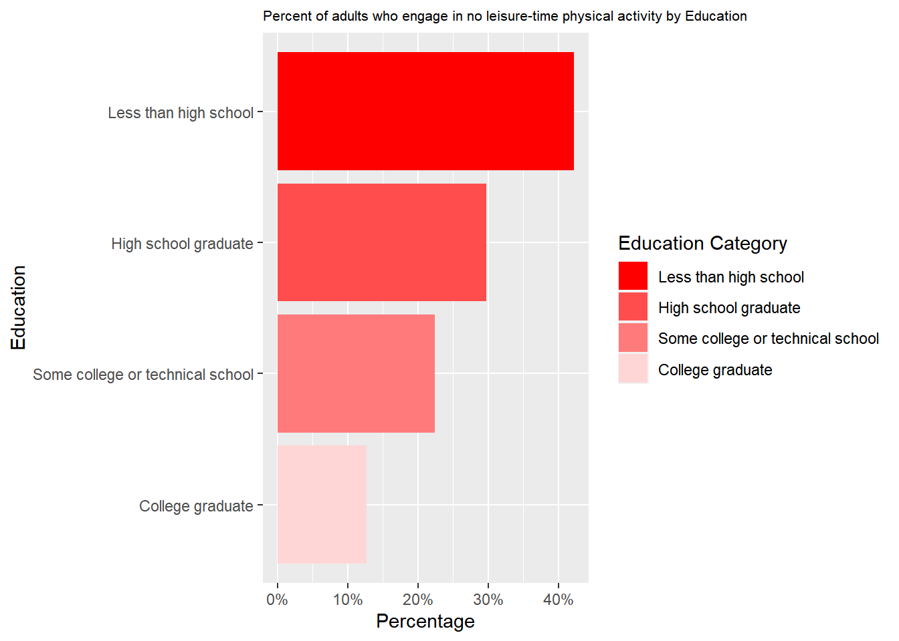

Code
df$Location <- tolower(df$Location)df$Location <- tolower(df$Location)library(dplyr)
library(tidyr)
library(tibble)
library(ggplot2)
library(choroplethr)
# data frame must contain "region" and "value" columnsdf_fruits <- df %>%
filter(Question == "Percent of adults who report consuming fruit less than one time daily") %>%
filter(Category == "Total") %>%
filter(YearStart == '2021')
# Create a new data frame with two columns
df_fruits <- data.frame(region = df_fruits$Location, value = df_fruits$Value)
# Print the structure of the new data frame
str(df_fruits)'data.frame': 55 obs. of 2 variables:
$ region: chr "vermont" "louisiana" "district of columbia" "illinois" ...
$ value : num 34.4 48.6 33.2 39.2 42.1 46.4 43.3 43 48.7 36.2 ...state_choropleth(df_fruits,
title = "Percent of adults who report consuming fruit less than one time daily",
legend = "Percentage")
df_vegetables <- df %>%
filter(Question == "Percent of adults who report consuming vegetables less than one time daily") %>%
filter(Category == "Total") %>%
filter(YearStart == '2021')
# Create a new data frame with two columns
df_vegetables <- data.frame(region = df_vegetables$Location, value = df_vegetables$Value)
# Print the structure of the new data frame
str(df_vegetables)'data.frame': 55 obs. of 2 variables:
$ region: chr "south dakota" "virgin islands" "national" "nevada" ...
$ value : num 19.2 32.2 20.6 24.2 21.3 23.2 25.7 15.6 19.2 18.7 ...state_choropleth(df_vegetables,
title = "Percent of adults who report consuming vegetables less than one time daily",
legend = "Percentage")
min(df_vegetables$value,na.rm=TRUE)[1] 13.1df_obesity <- df %>%
filter(Question == "Percent of adults aged 18 years and older who have obesity") %>%
filter(Category == "Total") %>%
filter(YearStart == '2021')
obesity_df <- data.frame(region = df_obesity$Location, value = df_obesity$Value)
df_merged <- merge(obesity_df, df_fruits, by = "region", all = TRUE)
df_merged <- merge(df_merged, df_vegetables, by = "region", all = TRUE)
colnames(df_merged)[2] <- "Obesity"
colnames(df_merged)[3] <- "Fruits"
colnames(df_merged)[4] <- "Vegetables"library(plotly)
plot_ly(df_merged, x = ~Obesity, y = ~Fruits, text= ~region,
hoverinfo = 'text') plot_ly(df_merged, x = ~Obesity, y = ~Vegetables, text= ~region,
hoverinfo = 'text') library(parcoords)
parcoords(df_merged,rownames = FALSE,
brushMode = "1D-axes",
color = list(colorBy = "region",
colorScale = "scaleOrdinal",
colorScheme = "schemeCategory10"),
alpha = 0.5,
withD3 = TRUE,
width = 770,
height = 600)df %>%
filter(Question == "Percent of adults who report consuming fruit less than one time daily") %>%
filter(Category == "Total") %>%
filter(YearStart == '2021') YearStart Location Class
1 2021 vermont Fruits and Vegetables
2 2021 louisiana Fruits and Vegetables
3 2021 district of columbia Fruits and Vegetables
4 2021 illinois Fruits and Vegetables
5 2021 nevada Fruits and Vegetables
6 2021 arkansas Fruits and Vegetables
7 2021 wyoming Fruits and Vegetables
8 2021 ohio Fruits and Vegetables
9 2021 oklahoma Fruits and Vegetables
10 2021 california Fruits and Vegetables
11 2021 new mexico Fruits and Vegetables
12 2021 nebraska Fruits and Vegetables
13 2021 south carolina Fruits and Vegetables
14 2021 virgin islands Fruits and Vegetables
15 2021 minnesota Fruits and Vegetables
16 2021 rhode island Fruits and Vegetables
17 2021 new hampshire Fruits and Vegetables
18 2021 maine Fruits and Vegetables
19 2021 indiana Fruits and Vegetables
20 2021 new york Fruits and Vegetables
21 2021 guam Fruits and Vegetables
22 2021 alabama Fruits and Vegetables
23 2021 virginia Fruits and Vegetables
24 2021 montana Fruits and Vegetables
25 2021 texas Fruits and Vegetables
26 2021 washington Fruits and Vegetables
27 2021 hawaii Fruits and Vegetables
28 2021 michigan Fruits and Vegetables
29 2021 delaware Fruits and Vegetables
30 2021 north carolina Fruits and Vegetables
31 2021 west virginia Fruits and Vegetables
32 2021 alaska Fruits and Vegetables
33 2021 new jersey Fruits and Vegetables
34 2021 kansas Fruits and Vegetables
35 2021 iowa Fruits and Vegetables
36 2021 massachusetts Fruits and Vegetables
37 2021 tennessee Fruits and Vegetables
38 2021 georgia Fruits and Vegetables
39 2021 connecticut Fruits and Vegetables
40 2021 missouri Fruits and Vegetables
41 2021 pennsylvania Fruits and Vegetables
42 2021 arizona Fruits and Vegetables
43 2021 utah Fruits and Vegetables
44 2021 idaho Fruits and Vegetables
45 2021 north dakota Fruits and Vegetables
46 2021 wisconsin Fruits and Vegetables
47 2021 kentucky Fruits and Vegetables
48 2021 national Fruits and Vegetables
49 2021 florida Fruits and Vegetables
50 2021 oregon Fruits and Vegetables
51 2021 colorado Fruits and Vegetables
52 2021 puerto rico Fruits and Vegetables
53 2021 maryland Fruits and Vegetables
54 2021 south dakota Fruits and Vegetables
55 2021 mississippi Fruits and Vegetables
Question Value
1 Percent of adults who report consuming fruit less than one time daily 34.4
2 Percent of adults who report consuming fruit less than one time daily 48.6
3 Percent of adults who report consuming fruit less than one time daily 33.2
4 Percent of adults who report consuming fruit less than one time daily 39.2
5 Percent of adults who report consuming fruit less than one time daily 42.1
6 Percent of adults who report consuming fruit less than one time daily 46.4
7 Percent of adults who report consuming fruit less than one time daily 43.3
8 Percent of adults who report consuming fruit less than one time daily 43.0
9 Percent of adults who report consuming fruit less than one time daily 48.7
10 Percent of adults who report consuming fruit less than one time daily 36.2
11 Percent of adults who report consuming fruit less than one time daily 41.2
12 Percent of adults who report consuming fruit less than one time daily 42.7
13 Percent of adults who report consuming fruit less than one time daily 42.5
14 Percent of adults who report consuming fruit less than one time daily 39.7
15 Percent of adults who report consuming fruit less than one time daily 36.4
16 Percent of adults who report consuming fruit less than one time daily 35.5
17 Percent of adults who report consuming fruit less than one time daily 36.1
18 Percent of adults who report consuming fruit less than one time daily 35.0
19 Percent of adults who report consuming fruit less than one time daily 43.4
20 Percent of adults who report consuming fruit less than one time daily 36.5
21 Percent of adults who report consuming fruit less than one time daily 42.7
22 Percent of adults who report consuming fruit less than one time daily 45.9
23 Percent of adults who report consuming fruit less than one time daily 39.6
24 Percent of adults who report consuming fruit less than one time daily 40.0
25 Percent of adults who report consuming fruit less than one time daily 40.9
26 Percent of adults who report consuming fruit less than one time daily 36.1
27 Percent of adults who report consuming fruit less than one time daily 42.6
28 Percent of adults who report consuming fruit less than one time daily 39.9
29 Percent of adults who report consuming fruit less than one time daily 39.7
30 Percent of adults who report consuming fruit less than one time daily 40.4
31 Percent of adults who report consuming fruit less than one time daily 46.0
32 Percent of adults who report consuming fruit less than one time daily 42.4
33 Percent of adults who report consuming fruit less than one time daily 35.7
34 Percent of adults who report consuming fruit less than one time daily 43.7
35 Percent of adults who report consuming fruit less than one time daily 41.5
36 Percent of adults who report consuming fruit less than one time daily 36.7
37 Percent of adults who report consuming fruit less than one time daily 46.1
38 Percent of adults who report consuming fruit less than one time daily 41.5
39 Percent of adults who report consuming fruit less than one time daily 36.0
40 Percent of adults who report consuming fruit less than one time daily 43.4
41 Percent of adults who report consuming fruit less than one time daily 39.4
42 Percent of adults who report consuming fruit less than one time daily 41.6
43 Percent of adults who report consuming fruit less than one time daily 37.7
44 Percent of adults who report consuming fruit less than one time daily 41.8
45 Percent of adults who report consuming fruit less than one time daily 44.0
46 Percent of adults who report consuming fruit less than one time daily 38.8
47 Percent of adults who report consuming fruit less than one time daily 45.0
48 Percent of adults who report consuming fruit less than one time daily 39.9
49 Percent of adults who report consuming fruit less than one time daily NA
50 Percent of adults who report consuming fruit less than one time daily 37.7
51 Percent of adults who report consuming fruit less than one time daily 38.3
52 Percent of adults who report consuming fruit less than one time daily 51.1
53 Percent of adults who report consuming fruit less than one time daily 37.1
54 Percent of adults who report consuming fruit less than one time daily 43.4
55 Percent of adults who report consuming fruit less than one time daily 46.9
SampleSize GeoLocation Category CategoryVal
1 5778 (43.62538123900049, -72.51764079099962) Total Total
2 4299 (31.31266064400046, -92.44568007099969) Total Total
3 2556 (38.89037138500049, -77.03196112699965) Total Total
4 2885 (40.48501028300046, -88.99771017799969) Total Total
5 2487 (39.493240390000494, -117.07184056399967) Total Total
6 4564 (34.74865012400045, -92.27449074299966) Total Total
7 3925 (43.23554134300048, -108.10983035299967) Total Total
8 12424 (40.06021014100048, -82.40426005599966) Total Total
9 4498 (35.47203135600046, -97.52107021399968) Total Total
10 6086 (37.63864012300047, -120.99999953799971) Total Total
11 5868 (34.52088095200048, -106.24058098499967) Total Total
12 13622 (41.6410409880005, -99.36572062299967) Total Total
13 8139 (33.998821303000454, -81.04537120699968) Total Total
14 1180 (18.335765, -64.896335) Total Total
15 14100 (46.35564873600049, -94.79420050299967) Total Total
16 4786 (41.70828019300046, -71.52247031399963) Total Total
17 5635 (43.65595011300047, -71.50036091999965) Total Total
18 10834 (45.254228894000505, -68.98503133599962) Total Total
19 8350 (39.766910452000445, -86.14996019399968) Total Total
20 32484 (42.82700103200045, -75.54397042699964) Total Total
21 1486 (13.444304, 144.793731) Total Total
22 4177 (32.84057112200048, -86.63186076199969) Total Total
23 8534 (37.54268067400045, -78.45789046299967) Total Total
24 5755 (47.06652897200047, -109.42442064499971) Total Total
25 9290 (31.827240407000488, -99.42677020599967) Total Total
26 11817 (47.52227862900048, -120.47001078999972) Total Total
27 7178 (21.304850435000446, -157.85774940299973) Total Total
28 7958 (44.6613195430005, -84.71439026999968) Total Total
29 3146 (39.008830667000495, -75.57774116799965) Total Total
30 4601 (35.466220975000454, -79.15925046299964) Total Total
31 6197 (38.66551020200046, -80.71264013499967) Total Total
32 4843 (64.84507995700051, -147.72205903599973) Total Total
33 6549 (40.13057004800049, -74.27369128799967) Total Total
34 15866 (38.34774030000045, -98.20078122699965) Total Total
35 8719 (42.46940091300047, -93.81649055599968) Total Total
36 7008 (42.27687047000046, -72.08269067499964) Total Total
37 4152 (35.68094058000048, -85.77449091399967) Total Total
38 6717 (32.83968109300048, -83.62758034599966) Total Total
39 6995 (41.56266102000046, -72.64984095199964) Total Total
40 11255 (38.635790776000476, -92.56630005299968) Total Total
41 5707 (40.79373015200048, -77.86070029399963) Total Total
42 9539 (34.865970280000454, -111.76381127699972) Total Total
43 9485 (39.360700171000474, -111.58713063499971) Total Total
44 6088 (43.682630005000476, -114.3637300419997) Total Total
45 5375 (47.47531977900047, -100.11842104899966) Total Total
46 5622 (44.39319117400049, -89.81637074199966) Total Total
47 4934 (37.645970271000465, -84.77497104799966) Total Total
48 378903 <NA> Total Total
49 NA (28.932040377000476, -81.92896053899966) Total Total
50 4859 (44.56744942400047, -120.15503132599969) Total Total
51 9140 (38.843840757000464, -106.13361092099967) Total Total
52 3829 (18.220833, -66.590149) Total Total
53 13312 (39.29058096400047, -76.60926011099963) Total Total
54 6716 (44.353130053000484, -100.3735306369997) Total Total
55 4049 (32.745510099000455, -89.53803082499968) Total Totaldf %>%
filter(Question == "Percent of adults who report consuming fruit less than one time daily") %>% filter(Category == 'Race/Ethnicity') %>% filter (YearStart == "2021") YearStart Location Class
1 2021 new york Fruits and Vegetables
2 2021 pennsylvania Fruits and Vegetables
3 2021 west virginia Fruits and Vegetables
4 2021 montana Fruits and Vegetables
5 2021 maryland Fruits and Vegetables
6 2021 utah Fruits and Vegetables
7 2021 louisiana Fruits and Vegetables
8 2021 iowa Fruits and Vegetables
9 2021 missouri Fruits and Vegetables
10 2021 new mexico Fruits and Vegetables
11 2021 north carolina Fruits and Vegetables
12 2021 oklahoma Fruits and Vegetables
13 2021 virgin islands Fruits and Vegetables
14 2021 louisiana Fruits and Vegetables
15 2021 colorado Fruits and Vegetables
16 2021 minnesota Fruits and Vegetables
17 2021 wyoming Fruits and Vegetables
18 2021 maine Fruits and Vegetables
19 2021 vermont Fruits and Vegetables
20 2021 rhode island Fruits and Vegetables
21 2021 utah Fruits and Vegetables
22 2021 delaware Fruits and Vegetables
23 2021 alabama Fruits and Vegetables
24 2021 oregon Fruits and Vegetables
25 2021 illinois Fruits and Vegetables
26 2021 south carolina Fruits and Vegetables
27 2021 california Fruits and Vegetables
28 2021 maine Fruits and Vegetables
29 2021 indiana Fruits and Vegetables
30 2021 national Fruits and Vegetables
31 2021 arizona Fruits and Vegetables
32 2021 michigan Fruits and Vegetables
33 2021 nebraska Fruits and Vegetables
34 2021 florida Fruits and Vegetables
35 2021 alaska Fruits and Vegetables
36 2021 virgin islands Fruits and Vegetables
37 2021 district of columbia Fruits and Vegetables
38 2021 nevada Fruits and Vegetables
39 2021 tennessee Fruits and Vegetables
40 2021 kentucky Fruits and Vegetables
41 2021 idaho Fruits and Vegetables
42 2021 connecticut Fruits and Vegetables
43 2021 kansas Fruits and Vegetables
44 2021 alabama Fruits and Vegetables
45 2021 alaska Fruits and Vegetables
46 2021 west virginia Fruits and Vegetables
47 2021 california Fruits and Vegetables
48 2021 new jersey Fruits and Vegetables
49 2021 indiana Fruits and Vegetables
50 2021 delaware Fruits and Vegetables
51 2021 ohio Fruits and Vegetables
52 2021 hawaii Fruits and Vegetables
53 2021 wisconsin Fruits and Vegetables
54 2021 south dakota Fruits and Vegetables
55 2021 south carolina Fruits and Vegetables
56 2021 georgia Fruits and Vegetables
57 2021 michigan Fruits and Vegetables
58 2021 oklahoma Fruits and Vegetables
59 2021 district of columbia Fruits and Vegetables
60 2021 iowa Fruits and Vegetables
61 2021 maryland Fruits and Vegetables
62 2021 florida Fruits and Vegetables
63 2021 washington Fruits and Vegetables
64 2021 new jersey Fruits and Vegetables
65 2021 kentucky Fruits and Vegetables
66 2021 hawaii Fruits and Vegetables
67 2021 new hampshire Fruits and Vegetables
68 2021 massachusetts Fruits and Vegetables
69 2021 kansas Fruits and Vegetables
70 2021 alaska Fruits and Vegetables
71 2021 connecticut Fruits and Vegetables
72 2021 ohio Fruits and Vegetables
73 2021 virginia Fruits and Vegetables
74 2021 new york Fruits and Vegetables
75 2021 mississippi Fruits and Vegetables
76 2021 pennsylvania Fruits and Vegetables
77 2021 maine Fruits and Vegetables
78 2021 puerto rico Fruits and Vegetables
79 2021 idaho Fruits and Vegetables
80 2021 new york Fruits and Vegetables
81 2021 mississippi Fruits and Vegetables
82 2021 georgia Fruits and Vegetables
83 2021 montana Fruits and Vegetables
84 2021 utah Fruits and Vegetables
85 2021 louisiana Fruits and Vegetables
86 2021 north dakota Fruits and Vegetables
87 2021 guam Fruits and Vegetables
88 2021 pennsylvania Fruits and Vegetables
89 2021 virginia Fruits and Vegetables
90 2021 washington Fruits and Vegetables
91 2021 north carolina Fruits and Vegetables
92 2021 hawaii Fruits and Vegetables
93 2021 new mexico Fruits and Vegetables
94 2021 new hampshire Fruits and Vegetables
95 2021 rhode island Fruits and Vegetables
96 2021 maine Fruits and Vegetables
97 2021 texas Fruits and Vegetables
98 2021 illinois Fruits and Vegetables
99 2021 vermont Fruits and Vegetables
100 2021 guam Fruits and Vegetables
101 2021 arkansas Fruits and Vegetables
102 2021 massachusetts Fruits and Vegetables
103 2021 arkansas Fruits and Vegetables
104 2021 oregon Fruits and Vegetables
105 2021 west virginia Fruits and Vegetables
106 2021 georgia Fruits and Vegetables
107 2021 wisconsin Fruits and Vegetables
108 2021 virgin islands Fruits and Vegetables
109 2021 rhode island Fruits and Vegetables
110 2021 kentucky Fruits and Vegetables
111 2021 idaho Fruits and Vegetables
112 2021 rhode island Fruits and Vegetables
113 2021 south carolina Fruits and Vegetables
114 2021 oregon Fruits and Vegetables
115 2021 missouri Fruits and Vegetables
116 2021 california Fruits and Vegetables
117 2021 new mexico Fruits and Vegetables
118 2021 oklahoma Fruits and Vegetables
119 2021 vermont Fruits and Vegetables
120 2021 maryland Fruits and Vegetables
121 2021 colorado Fruits and Vegetables
122 2021 guam Fruits and Vegetables
123 2021 wyoming Fruits and Vegetables
124 2021 alabama Fruits and Vegetables
125 2021 maryland Fruits and Vegetables
126 2021 new jersey Fruits and Vegetables
127 2021 hawaii Fruits and Vegetables
128 2021 illinois Fruits and Vegetables
129 2021 south carolina Fruits and Vegetables
130 2021 north carolina Fruits and Vegetables
131 2021 indiana Fruits and Vegetables
132 2021 oklahoma Fruits and Vegetables
133 2021 virgin islands Fruits and Vegetables
134 2021 hawaii Fruits and Vegetables
135 2021 district of columbia Fruits and Vegetables
136 2021 michigan Fruits and Vegetables
137 2021 minnesota Fruits and Vegetables
138 2021 nevada Fruits and Vegetables
139 2021 minnesota Fruits and Vegetables
140 2021 nevada Fruits and Vegetables
141 2021 idaho Fruits and Vegetables
142 2021 massachusetts Fruits and Vegetables
143 2021 maine Fruits and Vegetables
144 2021 puerto rico Fruits and Vegetables
145 2021 vermont Fruits and Vegetables
146 2021 national Fruits and Vegetables
147 2021 delaware Fruits and Vegetables
148 2021 indiana Fruits and Vegetables
149 2021 georgia Fruits and Vegetables
150 2021 south dakota Fruits and Vegetables
151 2021 north dakota Fruits and Vegetables
152 2021 arizona Fruits and Vegetables
153 2021 national Fruits and Vegetables
154 2021 tennessee Fruits and Vegetables
155 2021 tennessee Fruits and Vegetables
156 2021 washington Fruits and Vegetables
157 2021 ohio Fruits and Vegetables
158 2021 colorado Fruits and Vegetables
159 2021 missouri Fruits and Vegetables
160 2021 kansas Fruits and Vegetables
161 2021 indiana Fruits and Vegetables
162 2021 illinois Fruits and Vegetables
163 2021 oklahoma Fruits and Vegetables
164 2021 virginia Fruits and Vegetables
165 2021 new york Fruits and Vegetables
166 2021 mississippi Fruits and Vegetables
167 2021 arkansas Fruits and Vegetables
168 2021 pennsylvania Fruits and Vegetables
169 2021 illinois Fruits and Vegetables
170 2021 nevada Fruits and Vegetables
171 2021 south carolina Fruits and Vegetables
172 2021 hawaii Fruits and Vegetables
173 2021 alaska Fruits and Vegetables
174 2021 nebraska Fruits and Vegetables
175 2021 utah Fruits and Vegetables
176 2021 florida Fruits and Vegetables
177 2021 guam Fruits and Vegetables
178 2021 north dakota Fruits and Vegetables
179 2021 connecticut Fruits and Vegetables
180 2021 new york Fruits and Vegetables
181 2021 ohio Fruits and Vegetables
182 2021 national Fruits and Vegetables
183 2021 massachusetts Fruits and Vegetables
184 2021 district of columbia Fruits and Vegetables
185 2021 arizona Fruits and Vegetables
186 2021 north dakota Fruits and Vegetables
187 2021 washington Fruits and Vegetables
188 2021 kentucky Fruits and Vegetables
189 2021 north carolina Fruits and Vegetables
190 2021 south dakota Fruits and Vegetables
191 2021 new hampshire Fruits and Vegetables
192 2021 texas Fruits and Vegetables
193 2021 georgia Fruits and Vegetables
194 2021 iowa Fruits and Vegetables
195 2021 connecticut Fruits and Vegetables
196 2021 minnesota Fruits and Vegetables
197 2021 arkansas Fruits and Vegetables
198 2021 west virginia Fruits and Vegetables
199 2021 louisiana Fruits and Vegetables
200 2021 texas Fruits and Vegetables
201 2021 guam Fruits and Vegetables
202 2021 new jersey Fruits and Vegetables
203 2021 wisconsin Fruits and Vegetables
204 2021 rhode island Fruits and Vegetables
205 2021 alabama Fruits and Vegetables
206 2021 puerto rico Fruits and Vegetables
207 2021 pennsylvania Fruits and Vegetables
208 2021 iowa Fruits and Vegetables
209 2021 new mexico Fruits and Vegetables
210 2021 wisconsin Fruits and Vegetables
211 2021 mississippi Fruits and Vegetables
212 2021 wyoming Fruits and Vegetables
213 2021 california Fruits and Vegetables
214 2021 colorado Fruits and Vegetables
215 2021 montana Fruits and Vegetables
216 2021 arkansas Fruits and Vegetables
217 2021 oregon Fruits and Vegetables
218 2021 wyoming Fruits and Vegetables
219 2021 new hampshire Fruits and Vegetables
220 2021 district of columbia Fruits and Vegetables
221 2021 tennessee Fruits and Vegetables
222 2021 guam Fruits and Vegetables
223 2021 idaho Fruits and Vegetables
224 2021 kentucky Fruits and Vegetables
225 2021 washington Fruits and Vegetables
226 2021 wyoming Fruits and Vegetables
227 2021 hawaii Fruits and Vegetables
228 2021 alabama Fruits and Vegetables
229 2021 alabama Fruits and Vegetables
230 2021 colorado Fruits and Vegetables
231 2021 national Fruits and Vegetables
232 2021 vermont Fruits and Vegetables
233 2021 puerto rico Fruits and Vegetables
234 2021 arkansas Fruits and Vegetables
235 2021 new jersey Fruits and Vegetables
236 2021 indiana Fruits and Vegetables
237 2021 south dakota Fruits and Vegetables
238 2021 arizona Fruits and Vegetables
239 2021 montana Fruits and Vegetables
240 2021 iowa Fruits and Vegetables
241 2021 texas Fruits and Vegetables
242 2021 florida Fruits and Vegetables
243 2021 new york Fruits and Vegetables
244 2021 new mexico Fruits and Vegetables
245 2021 nebraska Fruits and Vegetables
246 2021 north dakota Fruits and Vegetables
247 2021 nevada Fruits and Vegetables
248 2021 louisiana Fruits and Vegetables
249 2021 tennessee Fruits and Vegetables
250 2021 ohio Fruits and Vegetables
251 2021 north carolina Fruits and Vegetables
252 2021 rhode island Fruits and Vegetables
253 2021 minnesota Fruits and Vegetables
254 2021 delaware Fruits and Vegetables
255 2021 utah Fruits and Vegetables
256 2021 california Fruits and Vegetables
257 2021 south carolina Fruits and Vegetables
258 2021 wyoming Fruits and Vegetables
259 2021 washington Fruits and Vegetables
260 2021 vermont Fruits and Vegetables
261 2021 indiana Fruits and Vegetables
262 2021 arizona Fruits and Vegetables
263 2021 michigan Fruits and Vegetables
264 2021 michigan Fruits and Vegetables
265 2021 kansas Fruits and Vegetables
266 2021 maryland Fruits and Vegetables
267 2021 nevada Fruits and Vegetables
268 2021 iowa Fruits and Vegetables
269 2021 utah Fruits and Vegetables
270 2021 missouri Fruits and Vegetables
271 2021 missouri Fruits and Vegetables
272 2021 florida Fruits and Vegetables
273 2021 georgia Fruits and Vegetables
274 2021 montana Fruits and Vegetables
275 2021 virgin islands Fruits and Vegetables
276 2021 wisconsin Fruits and Vegetables
277 2021 louisiana Fruits and Vegetables
278 2021 tennessee Fruits and Vegetables
279 2021 new jersey Fruits and Vegetables
280 2021 arkansas Fruits and Vegetables
281 2021 minnesota Fruits and Vegetables
282 2021 virginia Fruits and Vegetables
283 2021 kentucky Fruits and Vegetables
284 2021 north carolina Fruits and Vegetables
285 2021 alaska Fruits and Vegetables
286 2021 new hampshire Fruits and Vegetables
287 2021 montana Fruits and Vegetables
288 2021 connecticut Fruits and Vegetables
289 2021 oregon Fruits and Vegetables
290 2021 texas Fruits and Vegetables
291 2021 kansas Fruits and Vegetables
292 2021 ohio Fruits and Vegetables
293 2021 maine Fruits and Vegetables
294 2021 california Fruits and Vegetables
295 2021 guam Fruits and Vegetables
296 2021 massachusetts Fruits and Vegetables
297 2021 minnesota Fruits and Vegetables
298 2021 arkansas Fruits and Vegetables
299 2021 south dakota Fruits and Vegetables
300 2021 delaware Fruits and Vegetables
301 2021 north dakota Fruits and Vegetables
302 2021 mississippi Fruits and Vegetables
303 2021 wisconsin Fruits and Vegetables
304 2021 delaware Fruits and Vegetables
305 2021 pennsylvania Fruits and Vegetables
306 2021 puerto rico Fruits and Vegetables
307 2021 nebraska Fruits and Vegetables
308 2021 mississippi Fruits and Vegetables
309 2021 oklahoma Fruits and Vegetables
310 2021 wyoming Fruits and Vegetables
311 2021 colorado Fruits and Vegetables
312 2021 new jersey Fruits and Vegetables
313 2021 new hampshire Fruits and Vegetables
314 2021 oregon Fruits and Vegetables
315 2021 alaska Fruits and Vegetables
316 2021 illinois Fruits and Vegetables
317 2021 connecticut Fruits and Vegetables
318 2021 colorado Fruits and Vegetables
319 2021 tennessee Fruits and Vegetables
320 2021 massachusetts Fruits and Vegetables
321 2021 west virginia Fruits and Vegetables
322 2021 west virginia Fruits and Vegetables
323 2021 virginia Fruits and Vegetables
324 2021 texas Fruits and Vegetables
325 2021 new york Fruits and Vegetables
326 2021 south dakota Fruits and Vegetables
327 2021 florida Fruits and Vegetables
328 2021 new mexico Fruits and Vegetables
329 2021 maryland Fruits and Vegetables
330 2021 district of columbia Fruits and Vegetables
331 2021 nebraska Fruits and Vegetables
332 2021 national Fruits and Vegetables
333 2021 oklahoma Fruits and Vegetables
334 2021 new mexico Fruits and Vegetables
335 2021 puerto rico Fruits and Vegetables
336 2021 national Fruits and Vegetables
337 2021 delaware Fruits and Vegetables
338 2021 nebraska Fruits and Vegetables
339 2021 colorado Fruits and Vegetables
340 2021 north dakota Fruits and Vegetables
341 2021 arizona Fruits and Vegetables
342 2021 washington Fruits and Vegetables
343 2021 tennessee Fruits and Vegetables
344 2021 wyoming Fruits and Vegetables
345 2021 vermont Fruits and Vegetables
346 2021 missouri Fruits and Vegetables
347 2021 alabama Fruits and Vegetables
348 2021 illinois Fruits and Vegetables
349 2021 north carolina Fruits and Vegetables
350 2021 kentucky Fruits and Vegetables
351 2021 indiana Fruits and Vegetables
352 2021 west virginia Fruits and Vegetables
353 2021 virgin islands Fruits and Vegetables
354 2021 south dakota Fruits and Vegetables
355 2021 virginia Fruits and Vegetables
356 2021 louisiana Fruits and Vegetables
357 2021 district of columbia Fruits and Vegetables
358 2021 idaho Fruits and Vegetables
359 2021 nevada Fruits and Vegetables
360 2021 connecticut Fruits and Vegetables
361 2021 minnesota Fruits and Vegetables
362 2021 puerto rico Fruits and Vegetables
363 2021 michigan Fruits and Vegetables
364 2021 nevada Fruits and Vegetables
365 2021 rhode island Fruits and Vegetables
366 2021 utah Fruits and Vegetables
367 2021 delaware Fruits and Vegetables
368 2021 iowa Fruits and Vegetables
369 2021 florida Fruits and Vegetables
370 2021 oregon Fruits and Vegetables
371 2021 alaska Fruits and Vegetables
372 2021 california Fruits and Vegetables
373 2021 arizona Fruits and Vegetables
374 2021 washington Fruits and Vegetables
375 2021 montana Fruits and Vegetables
376 2021 ohio Fruits and Vegetables
377 2021 maryland Fruits and Vegetables
378 2021 missouri Fruits and Vegetables
379 2021 georgia Fruits and Vegetables
380 2021 wisconsin Fruits and Vegetables
381 2021 new jersey Fruits and Vegetables
382 2021 connecticut Fruits and Vegetables
383 2021 virgin islands Fruits and Vegetables
384 2021 michigan Fruits and Vegetables
385 2021 montana Fruits and Vegetables
386 2021 nebraska Fruits and Vegetables
387 2021 iowa Fruits and Vegetables
388 2021 utah Fruits and Vegetables
389 2021 kansas Fruits and Vegetables
390 2021 alabama Fruits and Vegetables
391 2021 new hampshire Fruits and Vegetables
392 2021 alaska Fruits and Vegetables
393 2021 maine Fruits and Vegetables
394 2021 california Fruits and Vegetables
395 2021 massachusetts Fruits and Vegetables
396 2021 ohio Fruits and Vegetables
397 2021 oregon Fruits and Vegetables
398 2021 florida Fruits and Vegetables
399 2021 arizona Fruits and Vegetables
400 2021 kentucky Fruits and Vegetables
401 2021 georgia Fruits and Vegetables
402 2021 texas Fruits and Vegetables
403 2021 michigan Fruits and Vegetables
404 2021 wisconsin Fruits and Vegetables
405 2021 pennsylvania Fruits and Vegetables
406 2021 virgin islands Fruits and Vegetables
407 2021 south carolina Fruits and Vegetables
408 2021 kansas Fruits and Vegetables
409 2021 mississippi Fruits and Vegetables
410 2021 maryland Fruits and Vegetables
411 2021 massachusetts Fruits and Vegetables
412 2021 district of columbia Fruits and Vegetables
413 2021 guam Fruits and Vegetables
414 2021 new mexico Fruits and Vegetables
415 2021 vermont Fruits and Vegetables
416 2021 national Fruits and Vegetables
417 2021 missouri Fruits and Vegetables
418 2021 north dakota Fruits and Vegetables
419 2021 north carolina Fruits and Vegetables
420 2021 hawaii Fruits and Vegetables
421 2021 south dakota Fruits and Vegetables
422 2021 new hampshire Fruits and Vegetables
423 2021 texas Fruits and Vegetables
424 2021 south carolina Fruits and Vegetables
425 2021 rhode island Fruits and Vegetables
426 2021 nebraska Fruits and Vegetables
427 2021 illinois Fruits and Vegetables
428 2021 oklahoma Fruits and Vegetables
429 2021 west virginia Fruits and Vegetables
430 2021 louisiana Fruits and Vegetables
431 2021 kansas Fruits and Vegetables
432 2021 virginia Fruits and Vegetables
433 2021 mississippi Fruits and Vegetables
434 2021 pennsylvania Fruits and Vegetables
435 2021 idaho Fruits and Vegetables
436 2021 new york Fruits and Vegetables
437 2021 virginia Fruits and Vegetables
438 2021 puerto rico Fruits and Vegetables
439 2021 maine Fruits and Vegetables
440 2021 idaho Fruits and Vegetables
Question Value
1 Percent of adults who report consuming fruit less than one time daily 38.1
2 Percent of adults who report consuming fruit less than one time daily 39.8
3 Percent of adults who report consuming fruit less than one time daily NA
4 Percent of adults who report consuming fruit less than one time daily NA
5 Percent of adults who report consuming fruit less than one time daily 26.8
6 Percent of adults who report consuming fruit less than one time daily NA
7 Percent of adults who report consuming fruit less than one time daily 53.1
8 Percent of adults who report consuming fruit less than one time daily NA
9 Percent of adults who report consuming fruit less than one time daily 35.4
10 Percent of adults who report consuming fruit less than one time daily NA
11 Percent of adults who report consuming fruit less than one time daily 30.6
12 Percent of adults who report consuming fruit less than one time daily 42.6
13 Percent of adults who report consuming fruit less than one time daily 35.8
14 Percent of adults who report consuming fruit less than one time daily NA
15 Percent of adults who report consuming fruit less than one time daily 37.8
16 Percent of adults who report consuming fruit less than one time daily 39.2
17 Percent of adults who report consuming fruit less than one time daily NA
18 Percent of adults who report consuming fruit less than one time daily 48.1
19 Percent of adults who report consuming fruit less than one time daily 36.8
20 Percent of adults who report consuming fruit less than one time daily NA
21 Percent of adults who report consuming fruit less than one time daily 38.5
22 Percent of adults who report consuming fruit less than one time daily 30.9
23 Percent of adults who report consuming fruit less than one time daily NA
24 Percent of adults who report consuming fruit less than one time daily 49.0
25 Percent of adults who report consuming fruit less than one time daily 32.8
26 Percent of adults who report consuming fruit less than one time daily 48.9
27 Percent of adults who report consuming fruit less than one time daily 42.4
28 Percent of adults who report consuming fruit less than one time daily 34.9
29 Percent of adults who report consuming fruit less than one time daily 55.4
30 Percent of adults who report consuming fruit less than one time daily 40.8
31 Percent of adults who report consuming fruit less than one time daily NA
32 Percent of adults who report consuming fruit less than one time daily NA
33 Percent of adults who report consuming fruit less than one time daily 52.8
34 Percent of adults who report consuming fruit less than one time daily NA
35 Percent of adults who report consuming fruit less than one time daily 40.2
36 Percent of adults who report consuming fruit less than one time daily NA
37 Percent of adults who report consuming fruit less than one time daily 29.2
38 Percent of adults who report consuming fruit less than one time daily 45.9
39 Percent of adults who report consuming fruit less than one time daily NA
40 Percent of adults who report consuming fruit less than one time daily 46.7
41 Percent of adults who report consuming fruit less than one time daily NA
42 Percent of adults who report consuming fruit less than one time daily 38.4
43 Percent of adults who report consuming fruit less than one time daily 41.0
44 Percent of adults who report consuming fruit less than one time daily 49.6
45 Percent of adults who report consuming fruit less than one time daily 51.1
46 Percent of adults who report consuming fruit less than one time daily NA
47 Percent of adults who report consuming fruit less than one time daily 39.4
48 Percent of adults who report consuming fruit less than one time daily NA
49 Percent of adults who report consuming fruit less than one time daily 46.1
50 Percent of adults who report consuming fruit less than one time daily 40.7
51 Percent of adults who report consuming fruit less than one time daily 42.9
52 Percent of adults who report consuming fruit less than one time daily 45.8
53 Percent of adults who report consuming fruit less than one time daily NA
54 Percent of adults who report consuming fruit less than one time daily 35.8
55 Percent of adults who report consuming fruit less than one time daily 43.1
56 Percent of adults who report consuming fruit less than one time daily NA
57 Percent of adults who report consuming fruit less than one time daily 47.9
58 Percent of adults who report consuming fruit less than one time daily NA
59 Percent of adults who report consuming fruit less than one time daily 35.2
60 Percent of adults who report consuming fruit less than one time daily 35.4
61 Percent of adults who report consuming fruit less than one time daily 37.7
62 Percent of adults who report consuming fruit less than one time daily NA
63 Percent of adults who report consuming fruit less than one time daily 31.1
64 Percent of adults who report consuming fruit less than one time daily 36.4
65 Percent of adults who report consuming fruit less than one time daily NA
66 Percent of adults who report consuming fruit less than one time daily NA
67 Percent of adults who report consuming fruit less than one time daily NA
68 Percent of adults who report consuming fruit less than one time daily NA
69 Percent of adults who report consuming fruit less than one time daily 48.7
70 Percent of adults who report consuming fruit less than one time daily 35.4
71 Percent of adults who report consuming fruit less than one time daily 30.1
72 Percent of adults who report consuming fruit less than one time daily 43.3
73 Percent of adults who report consuming fruit less than one time daily 41.6
74 Percent of adults who report consuming fruit less than one time daily 36.5
75 Percent of adults who report consuming fruit less than one time daily NA
76 Percent of adults who report consuming fruit less than one time daily NA
77 Percent of adults who report consuming fruit less than one time daily 38.4
78 Percent of adults who report consuming fruit less than one time daily NA
79 Percent of adults who report consuming fruit less than one time daily NA
80 Percent of adults who report consuming fruit less than one time daily 36.9
81 Percent of adults who report consuming fruit less than one time daily NA
82 Percent of adults who report consuming fruit less than one time daily 27.4
83 Percent of adults who report consuming fruit less than one time daily NA
84 Percent of adults who report consuming fruit less than one time daily 48.0
85 Percent of adults who report consuming fruit less than one time daily 41.8
86 Percent of adults who report consuming fruit less than one time daily NA
87 Percent of adults who report consuming fruit less than one time daily NA
88 Percent of adults who report consuming fruit less than one time daily 41.9
89 Percent of adults who report consuming fruit less than one time daily NA
90 Percent of adults who report consuming fruit less than one time daily 43.8
91 Percent of adults who report consuming fruit less than one time daily 52.5
92 Percent of adults who report consuming fruit less than one time daily 46.1
93 Percent of adults who report consuming fruit less than one time daily 42.3
94 Percent of adults who report consuming fruit less than one time daily 36.1
95 Percent of adults who report consuming fruit less than one time daily 37.3
96 Percent of adults who report consuming fruit less than one time daily NA
97 Percent of adults who report consuming fruit less than one time daily 39.5
98 Percent of adults who report consuming fruit less than one time daily NA
99 Percent of adults who report consuming fruit less than one time daily NA
100 Percent of adults who report consuming fruit less than one time daily 31.5
101 Percent of adults who report consuming fruit less than one time daily NA
102 Percent of adults who report consuming fruit less than one time daily 33.2
103 Percent of adults who report consuming fruit less than one time daily 37.2
104 Percent of adults who report consuming fruit less than one time daily 32.9
105 Percent of adults who report consuming fruit less than one time daily 41.6
106 Percent of adults who report consuming fruit less than one time daily 48.4
107 Percent of adults who report consuming fruit less than one time daily 43.5
108 Percent of adults who report consuming fruit less than one time daily NA
109 Percent of adults who report consuming fruit less than one time daily 28.7
110 Percent of adults who report consuming fruit less than one time daily 38.3
111 Percent of adults who report consuming fruit less than one time daily 42.6
112 Percent of adults who report consuming fruit less than one time daily 28.4
113 Percent of adults who report consuming fruit less than one time daily 46.6
114 Percent of adults who report consuming fruit less than one time daily NA
115 Percent of adults who report consuming fruit less than one time daily 23.5
116 Percent of adults who report consuming fruit less than one time daily 34.0
117 Percent of adults who report consuming fruit less than one time daily 36.5
118 Percent of adults who report consuming fruit less than one time daily 42.2
119 Percent of adults who report consuming fruit less than one time daily NA
120 Percent of adults who report consuming fruit less than one time daily 30.7
121 Percent of adults who report consuming fruit less than one time daily 43.9
122 Percent of adults who report consuming fruit less than one time daily 39.4
123 Percent of adults who report consuming fruit less than one time daily NA
124 Percent of adults who report consuming fruit less than one time daily 45.6
125 Percent of adults who report consuming fruit less than one time daily 41.0
126 Percent of adults who report consuming fruit less than one time daily 35.8
127 Percent of adults who report consuming fruit less than one time daily 33.0
128 Percent of adults who report consuming fruit less than one time daily 37.3
129 Percent of adults who report consuming fruit less than one time daily NA
130 Percent of adults who report consuming fruit less than one time daily 40.5
131 Percent of adults who report consuming fruit less than one time daily NA
132 Percent of adults who report consuming fruit less than one time daily NA
133 Percent of adults who report consuming fruit less than one time daily NA
134 Percent of adults who report consuming fruit less than one time daily NA
135 Percent of adults who report consuming fruit less than one time daily NA
136 Percent of adults who report consuming fruit less than one time daily 40.7
137 Percent of adults who report consuming fruit less than one time daily 38.4
138 Percent of adults who report consuming fruit less than one time daily 40.8
139 Percent of adults who report consuming fruit less than one time daily NA
140 Percent of adults who report consuming fruit less than one time daily 38.8
141 Percent of adults who report consuming fruit less than one time daily 41.7
142 Percent of adults who report consuming fruit less than one time daily NA
143 Percent of adults who report consuming fruit less than one time daily NA
144 Percent of adults who report consuming fruit less than one time daily NA
145 Percent of adults who report consuming fruit less than one time daily 33.9
146 Percent of adults who report consuming fruit less than one time daily 40.2
147 Percent of adults who report consuming fruit less than one time daily 30.8
148 Percent of adults who report consuming fruit less than one time daily 36.5
149 Percent of adults who report consuming fruit less than one time daily 44.6
150 Percent of adults who report consuming fruit less than one time daily NA
151 Percent of adults who report consuming fruit less than one time daily 46.4
152 Percent of adults who report consuming fruit less than one time daily 40.0
153 Percent of adults who report consuming fruit less than one time daily 39.3
154 Percent of adults who report consuming fruit less than one time daily 30.4
155 Percent of adults who report consuming fruit less than one time daily NA
156 Percent of adults who report consuming fruit less than one time daily 36.4
157 Percent of adults who report consuming fruit less than one time daily 43.8
158 Percent of adults who report consuming fruit less than one time daily 32.5
159 Percent of adults who report consuming fruit less than one time daily 32.6
160 Percent of adults who report consuming fruit less than one time daily 47.3
161 Percent of adults who report consuming fruit less than one time daily 44.4
162 Percent of adults who report consuming fruit less than one time daily NA
163 Percent of adults who report consuming fruit less than one time daily NA
164 Percent of adults who report consuming fruit less than one time daily 34.0
165 Percent of adults who report consuming fruit less than one time daily 36.2
166 Percent of adults who report consuming fruit less than one time daily NA
167 Percent of adults who report consuming fruit less than one time daily 43.7
168 Percent of adults who report consuming fruit less than one time daily 37.3
169 Percent of adults who report consuming fruit less than one time daily 41.3
170 Percent of adults who report consuming fruit less than one time daily NA
171 Percent of adults who report consuming fruit less than one time daily 43.4
172 Percent of adults who report consuming fruit less than one time daily 48.3
173 Percent of adults who report consuming fruit less than one time daily NA
174 Percent of adults who report consuming fruit less than one time daily 36.1
175 Percent of adults who report consuming fruit less than one time daily NA
176 Percent of adults who report consuming fruit less than one time daily NA
177 Percent of adults who report consuming fruit less than one time daily NA
178 Percent of adults who report consuming fruit less than one time daily 43.7
179 Percent of adults who report consuming fruit less than one time daily 36.6
180 Percent of adults who report consuming fruit less than one time daily 36.4
181 Percent of adults who report consuming fruit less than one time daily 26.8
182 Percent of adults who report consuming fruit less than one time daily 41.2
183 Percent of adults who report consuming fruit less than one time daily 37.2
184 Percent of adults who report consuming fruit less than one time daily 35.0
185 Percent of adults who report consuming fruit less than one time daily 41.3
186 Percent of adults who report consuming fruit less than one time daily 32.3
187 Percent of adults who report consuming fruit less than one time daily 37.8
188 Percent of adults who report consuming fruit less than one time daily NA
189 Percent of adults who report consuming fruit less than one time daily 30.8
190 Percent of adults who report consuming fruit less than one time daily NA
191 Percent of adults who report consuming fruit less than one time daily NA
192 Percent of adults who report consuming fruit less than one time daily 38.5
193 Percent of adults who report consuming fruit less than one time daily 39.2
194 Percent of adults who report consuming fruit less than one time daily 42.4
195 Percent of adults who report consuming fruit less than one time daily NA
196 Percent of adults who report consuming fruit less than one time daily 35.0
197 Percent of adults who report consuming fruit less than one time daily 42.9
198 Percent of adults who report consuming fruit less than one time daily 46.9
199 Percent of adults who report consuming fruit less than one time daily NA
200 Percent of adults who report consuming fruit less than one time daily 39.9
201 Percent of adults who report consuming fruit less than one time daily 36.6
202 Percent of adults who report consuming fruit less than one time daily 35.9
203 Percent of adults who report consuming fruit less than one time daily 40.6
204 Percent of adults who report consuming fruit less than one time daily 43.4
205 Percent of adults who report consuming fruit less than one time daily NA
206 Percent of adults who report consuming fruit less than one time daily NA
207 Percent of adults who report consuming fruit less than one time daily NA
208 Percent of adults who report consuming fruit less than one time daily 45.5
209 Percent of adults who report consuming fruit less than one time daily 42.0
210 Percent of adults who report consuming fruit less than one time daily 38.0
211 Percent of adults who report consuming fruit less than one time daily 42.1
212 Percent of adults who report consuming fruit less than one time daily 42.5
213 Percent of adults who report consuming fruit less than one time daily 34.3
214 Percent of adults who report consuming fruit less than one time daily 39.5
215 Percent of adults who report consuming fruit less than one time daily NA
216 Percent of adults who report consuming fruit less than one time daily NA
217 Percent of adults who report consuming fruit less than one time daily 37.1
218 Percent of adults who report consuming fruit less than one time daily NA
219 Percent of adults who report consuming fruit less than one time daily 36.5
220 Percent of adults who report consuming fruit less than one time daily NA
221 Percent of adults who report consuming fruit less than one time daily NA
222 Percent of adults who report consuming fruit less than one time daily NA
223 Percent of adults who report consuming fruit less than one time daily 48.9
224 Percent of adults who report consuming fruit less than one time daily NA
225 Percent of adults who report consuming fruit less than one time daily 53.6
226 Percent of adults who report consuming fruit less than one time daily 49.6
227 Percent of adults who report consuming fruit less than one time daily 33.8
228 Percent of adults who report consuming fruit less than one time daily 42.6
229 Percent of adults who report consuming fruit less than one time daily NA
230 Percent of adults who report consuming fruit less than one time daily NA
231 Percent of adults who report consuming fruit less than one time daily 36.7
232 Percent of adults who report consuming fruit less than one time daily NA
233 Percent of adults who report consuming fruit less than one time daily NA
234 Percent of adults who report consuming fruit less than one time daily NA
235 Percent of adults who report consuming fruit less than one time daily 36.8
236 Percent of adults who report consuming fruit less than one time daily 42.4
237 Percent of adults who report consuming fruit less than one time daily 36.1
238 Percent of adults who report consuming fruit less than one time daily 42.4
239 Percent of adults who report consuming fruit less than one time daily 41.3
240 Percent of adults who report consuming fruit less than one time daily 41.4
241 Percent of adults who report consuming fruit less than one time daily 41.1
242 Percent of adults who report consuming fruit less than one time daily NA
243 Percent of adults who report consuming fruit less than one time daily 40.4
244 Percent of adults who report consuming fruit less than one time daily 41.3
245 Percent of adults who report consuming fruit less than one time daily NA
246 Percent of adults who report consuming fruit less than one time daily 41.0
247 Percent of adults who report consuming fruit less than one time daily NA
248 Percent of adults who report consuming fruit less than one time daily NA
249 Percent of adults who report consuming fruit less than one time daily 49.0
250 Percent of adults who report consuming fruit less than one time daily 47.0
251 Percent of adults who report consuming fruit less than one time daily 42.8
252 Percent of adults who report consuming fruit less than one time daily 33.4
253 Percent of adults who report consuming fruit less than one time daily NA
254 Percent of adults who report consuming fruit less than one time daily NA
255 Percent of adults who report consuming fruit less than one time daily 37.4
256 Percent of adults who report consuming fruit less than one time daily 39.6
257 Percent of adults who report consuming fruit less than one time daily 35.3
258 Percent of adults who report consuming fruit less than one time daily NA
259 Percent of adults who report consuming fruit less than one time daily 37.6
260 Percent of adults who report consuming fruit less than one time daily NA
261 Percent of adults who report consuming fruit less than one time daily 30.2
262 Percent of adults who report consuming fruit less than one time daily 41.4
263 Percent of adults who report consuming fruit less than one time daily 39.2
264 Percent of adults who report consuming fruit less than one time daily 45.1
265 Percent of adults who report consuming fruit less than one time daily 45.4
266 Percent of adults who report consuming fruit less than one time daily 33.2
267 Percent of adults who report consuming fruit less than one time daily 41.9
268 Percent of adults who report consuming fruit less than one time daily 33.3
269 Percent of adults who report consuming fruit less than one time daily 40.8
270 Percent of adults who report consuming fruit less than one time daily 45.4
271 Percent of adults who report consuming fruit less than one time daily 45.1
272 Percent of adults who report consuming fruit less than one time daily NA
273 Percent of adults who report consuming fruit less than one time daily 40.1
274 Percent of adults who report consuming fruit less than one time daily NA
275 Percent of adults who report consuming fruit less than one time daily NA
276 Percent of adults who report consuming fruit less than one time daily 43.6
277 Percent of adults who report consuming fruit less than one time daily NA
278 Percent of adults who report consuming fruit less than one time daily NA
279 Percent of adults who report consuming fruit less than one time daily NA
280 Percent of adults who report consuming fruit less than one time daily 50.1
281 Percent of adults who report consuming fruit less than one time daily 41.9
282 Percent of adults who report consuming fruit less than one time daily NA
283 Percent of adults who report consuming fruit less than one time daily 52.1
284 Percent of adults who report consuming fruit less than one time daily NA
285 Percent of adults who report consuming fruit less than one time daily 53.4
286 Percent of adults who report consuming fruit less than one time daily 35.5
287 Percent of adults who report consuming fruit less than one time daily 40.4
288 Percent of adults who report consuming fruit less than one time daily 35.7
289 Percent of adults who report consuming fruit less than one time daily NA
290 Percent of adults who report consuming fruit less than one time daily 34.8
291 Percent of adults who report consuming fruit less than one time daily NA
292 Percent of adults who report consuming fruit less than one time daily NA
293 Percent of adults who report consuming fruit less than one time daily 33.0
294 Percent of adults who report consuming fruit less than one time daily NA
295 Percent of adults who report consuming fruit less than one time daily 45.8
296 Percent of adults who report consuming fruit less than one time daily 32.7
297 Percent of adults who report consuming fruit less than one time daily 36.3
298 Percent of adults who report consuming fruit less than one time daily 47.8
299 Percent of adults who report consuming fruit less than one time daily 45.2
300 Percent of adults who report consuming fruit less than one time daily 37.4
301 Percent of adults who report consuming fruit less than one time daily 50.4
302 Percent of adults who report consuming fruit less than one time daily NA
303 Percent of adults who report consuming fruit less than one time daily 56.5
304 Percent of adults who report consuming fruit less than one time daily NA
305 Percent of adults who report consuming fruit less than one time daily 37.7
306 Percent of adults who report consuming fruit less than one time daily NA
307 Percent of adults who report consuming fruit less than one time daily 41.7
308 Percent of adults who report consuming fruit less than one time daily 50.6
309 Percent of adults who report consuming fruit less than one time daily 52.5
310 Percent of adults who report consuming fruit less than one time daily 53.9
311 Percent of adults who report consuming fruit less than one time daily 38.2
312 Percent of adults who report consuming fruit less than one time daily 37.4
313 Percent of adults who report consuming fruit less than one time daily 39.0
314 Percent of adults who report consuming fruit less than one time daily 47.5
315 Percent of adults who report consuming fruit less than one time daily 21.9
316 Percent of adults who report consuming fruit less than one time daily NA
317 Percent of adults who report consuming fruit less than one time daily NA
318 Percent of adults who report consuming fruit less than one time daily 34.3
319 Percent of adults who report consuming fruit less than one time daily 46.2
320 Percent of adults who report consuming fruit less than one time daily NA
321 Percent of adults who report consuming fruit less than one time daily 50.1
322 Percent of adults who report consuming fruit less than one time daily 46.1
323 Percent of adults who report consuming fruit less than one time daily 40.5
324 Percent of adults who report consuming fruit less than one time daily 43.6
325 Percent of adults who report consuming fruit less than one time daily NA
326 Percent of adults who report consuming fruit less than one time daily NA
327 Percent of adults who report consuming fruit less than one time daily NA
328 Percent of adults who report consuming fruit less than one time daily 33.7
329 Percent of adults who report consuming fruit less than one time daily 31.2
330 Percent of adults who report consuming fruit less than one time daily 37.1
331 Percent of adults who report consuming fruit less than one time daily NA
332 Percent of adults who report consuming fruit less than one time daily 41.9
333 Percent of adults who report consuming fruit less than one time daily 50.3
334 Percent of adults who report consuming fruit less than one time daily 39.5
335 Percent of adults who report consuming fruit less than one time daily 51.1
336 Percent of adults who report consuming fruit less than one time daily 38.0
337 Percent of adults who report consuming fruit less than one time daily 40.9
338 Percent of adults who report consuming fruit less than one time daily 50.9
339 Percent of adults who report consuming fruit less than one time daily 41.4
340 Percent of adults who report consuming fruit less than one time daily NA
341 Percent of adults who report consuming fruit less than one time daily 43.5
342 Percent of adults who report consuming fruit less than one time daily 42.7
343 Percent of adults who report consuming fruit less than one time daily 47.2
344 Percent of adults who report consuming fruit less than one time daily NA
345 Percent of adults who report consuming fruit less than one time daily 45.4
346 Percent of adults who report consuming fruit less than one time daily 37.8
347 Percent of adults who report consuming fruit less than one time daily NA
348 Percent of adults who report consuming fruit less than one time daily 35.5
349 Percent of adults who report consuming fruit less than one time daily 32.5
350 Percent of adults who report consuming fruit less than one time daily 45.3
351 Percent of adults who report consuming fruit less than one time daily 33.5
352 Percent of adults who report consuming fruit less than one time daily NA
353 Percent of adults who report consuming fruit less than one time daily 40.4
354 Percent of adults who report consuming fruit less than one time daily NA
355 Percent of adults who report consuming fruit less than one time daily 39.7
356 Percent of adults who report consuming fruit less than one time daily 44.8
357 Percent of adults who report consuming fruit less than one time daily NA
358 Percent of adults who report consuming fruit less than one time daily NA
359 Percent of adults who report consuming fruit less than one time daily NA
360 Percent of adults who report consuming fruit less than one time daily 27.6
361 Percent of adults who report consuming fruit less than one time daily 35.3
362 Percent of adults who report consuming fruit less than one time daily NA
363 Percent of adults who report consuming fruit less than one time daily 37.7
364 Percent of adults who report consuming fruit less than one time daily 44.2
365 Percent of adults who report consuming fruit less than one time daily NA
366 Percent of adults who report consuming fruit less than one time daily 37.8
367 Percent of adults who report consuming fruit less than one time daily NA
368 Percent of adults who report consuming fruit less than one time daily NA
369 Percent of adults who report consuming fruit less than one time daily NA
370 Percent of adults who report consuming fruit less than one time daily 49.8
371 Percent of adults who report consuming fruit less than one time daily 47.5
372 Percent of adults who report consuming fruit less than one time daily 36.5
373 Percent of adults who report consuming fruit less than one time daily 37.8
374 Percent of adults who report consuming fruit less than one time daily 36.5
375 Percent of adults who report consuming fruit less than one time daily 38.8
376 Percent of adults who report consuming fruit less than one time daily 44.8
377 Percent of adults who report consuming fruit less than one time daily NA
378 Percent of adults who report consuming fruit less than one time daily 40.2
379 Percent of adults who report consuming fruit less than one time daily NA
380 Percent of adults who report consuming fruit less than one time daily 44.5
381 Percent of adults who report consuming fruit less than one time daily 31.0
382 Percent of adults who report consuming fruit less than one time daily 39.4
383 Percent of adults who report consuming fruit less than one time daily NA
384 Percent of adults who report consuming fruit less than one time daily 44.3
385 Percent of adults who report consuming fruit less than one time daily 37.6
386 Percent of adults who report consuming fruit less than one time daily 42.6
387 Percent of adults who report consuming fruit less than one time daily 34.6
388 Percent of adults who report consuming fruit less than one time daily 23.8
389 Percent of adults who report consuming fruit less than one time daily 42.6
390 Percent of adults who report consuming fruit less than one time daily 37.5
391 Percent of adults who report consuming fruit less than one time daily NA
392 Percent of adults who report consuming fruit less than one time daily 42.4
393 Percent of adults who report consuming fruit less than one time daily NA
394 Percent of adults who report consuming fruit less than one time daily NA
395 Percent of adults who report consuming fruit less than one time daily 41.2
396 Percent of adults who report consuming fruit less than one time daily 31.9
397 Percent of adults who report consuming fruit less than one time daily 37.5
398 Percent of adults who report consuming fruit less than one time daily NA
399 Percent of adults who report consuming fruit less than one time daily 51.2
400 Percent of adults who report consuming fruit less than one time daily NA
401 Percent of adults who report consuming fruit less than one time daily 44.3
402 Percent of adults who report consuming fruit less than one time daily NA
403 Percent of adults who report consuming fruit less than one time daily 39.4
404 Percent of adults who report consuming fruit less than one time daily NA
405 Percent of adults who report consuming fruit less than one time daily NA
406 Percent of adults who report consuming fruit less than one time daily 39.9
407 Percent of adults who report consuming fruit less than one time daily 29.8
408 Percent of adults who report consuming fruit less than one time daily 36.2
409 Percent of adults who report consuming fruit less than one time daily NA
410 Percent of adults who report consuming fruit less than one time daily 39.2
411 Percent of adults who report consuming fruit less than one time daily 26.7
412 Percent of adults who report consuming fruit less than one time daily 29.9
413 Percent of adults who report consuming fruit less than one time daily 44.3
414 Percent of adults who report consuming fruit less than one time daily NA
415 Percent of adults who report consuming fruit less than one time daily 34.5
416 Percent of adults who report consuming fruit less than one time daily 39.4
417 Percent of adults who report consuming fruit less than one time daily NA
418 Percent of adults who report consuming fruit less than one time daily NA
419 Percent of adults who report consuming fruit less than one time daily NA
420 Percent of adults who report consuming fruit less than one time daily 41.8
421 Percent of adults who report consuming fruit less than one time daily 35.8
422 Percent of adults who report consuming fruit less than one time daily 40.5
423 Percent of adults who report consuming fruit less than one time daily 41.2
424 Percent of adults who report consuming fruit less than one time daily 40.9
425 Percent of adults who report consuming fruit less than one time daily 36.1
426 Percent of adults who report consuming fruit less than one time daily 53.9
427 Percent of adults who report consuming fruit less than one time daily NA
428 Percent of adults who report consuming fruit less than one time daily 48.7
429 Percent of adults who report consuming fruit less than one time daily NA
430 Percent of adults who report consuming fruit less than one time daily 39.1
431 Percent of adults who report consuming fruit less than one time daily 44.2
432 Percent of adults who report consuming fruit less than one time daily NA
433 Percent of adults who report consuming fruit less than one time daily NA
434 Percent of adults who report consuming fruit less than one time daily 42.5
435 Percent of adults who report consuming fruit less than one time daily NA
436 Percent of adults who report consuming fruit less than one time daily 32.8
437 Percent of adults who report consuming fruit less than one time daily 40.9
438 Percent of adults who report consuming fruit less than one time daily NA
439 Percent of adults who report consuming fruit less than one time daily 32.8
440 Percent of adults who report consuming fruit less than one time daily 41.8
SampleSize GeoLocation Category
1 2876 (42.82700103200045, -75.54397042699964) Race/Ethnicity
2 4335 (40.79373015200048, -77.86070029399963) Race/Ethnicity
3 NA (38.66551020200046, -80.71264013499967) Race/Ethnicity
4 NA (47.06652897200047, -109.42442064499971) Race/Ethnicity
5 67 (39.29058096400047, -76.60926011099963) Race/Ethnicity
6 NA (39.360700171000474, -111.58713063499971) Race/Ethnicity
7 2981 (31.31266064400046, -92.44568007099969) Race/Ethnicity
8 NA (42.46940091300047, -93.81649055599968) Race/Ethnicity
9 232 (38.635790776000476, -92.56630005299968) Race/Ethnicity
10 NA (34.52088095200048, -106.24058098499967) Race/Ethnicity
11 69 (35.466220975000454, -79.15925046299964) Race/Ethnicity
12 222 (35.47203135600046, -97.52107021399968) Race/Ethnicity
13 178 (18.335765, -64.896335) Race/Ethnicity
14 NA (31.31266064400046, -92.44568007099969) Race/Ethnicity
15 1526 (38.843840757000464, -106.13361092099967) Race/Ethnicity
16 375 (46.35564873600049, -94.79420050299967) Race/Ethnicity
17 NA (43.23554134300048, -108.10983035299967) Race/Ethnicity
18 90 (45.254228894000505, -68.98503133599962) Race/Ethnicity
19 68 (43.62538123900049, -72.51764079099962) Race/Ethnicity
20 NA (41.70828019300046, -71.52247031399963) Race/Ethnicity
21 893 (39.360700171000474, -111.58713063499971) Race/Ethnicity
22 68 (39.008830667000495, -75.57774116799965) Race/Ethnicity
23 NA (32.84057112200048, -86.63186076199969) Race/Ethnicity
24 65 (44.56744942400047, -120.15503132599969) Race/Ethnicity
25 250 (40.48501028300046, -88.99771017799969) Race/Ethnicity
26 70 (33.998821303000454, -81.04537120699968) Race/Ethnicity
27 71 (37.63864012300047, -120.99999953799971) Race/Ethnicity
28 10053 (45.254228894000505, -68.98503133599962) Race/Ethnicity
29 99 (39.766910452000445, -86.14996019399968) Race/Ethnicity
30 287350 <NA> Race/Ethnicity
31 NA (34.865970280000454, -111.76381127699972) Race/Ethnicity
32 NA (44.6613195430005, -84.71439026999968) Race/Ethnicity
33 208 (41.6410409880005, -99.36572062299967) Race/Ethnicity
34 NA (28.932040377000476, -81.92896053899966) Race/Ethnicity
35 3459 (64.84507995700051, -147.72205903599973) Race/Ethnicity
36 NA (18.335765, -64.896335) Race/Ethnicity
37 63 (38.89037138500049, -77.03196112699965) Race/Ethnicity
38 60 (39.493240390000494, -117.07184056399967) Race/Ethnicity
39 NA (35.68094058000048, -85.77449091399967) Race/Ethnicity
40 496 (37.645970271000465, -84.77497104799966) Race/Ethnicity
41 NA (43.682630005000476, -114.3637300419997) Race/Ethnicity
42 107 (41.56266102000046, -72.64984095199964) Race/Ethnicity
43 737 (38.34774030000045, -98.20078122699965) Race/Ethnicity
44 2854 (32.84057112200048, -86.63186076199969) Race/Ethnicity
45 522 (64.84507995700051, -147.72205903599973) Race/Ethnicity
46 NA (38.66551020200046, -80.71264013499967) Race/Ethnicity
47 537 (37.63864012300047, -120.99999953799971) Race/Ethnicity
48 NA (40.13057004800049, -74.27369128799967) Race/Ethnicity
49 123 (39.766910452000445, -86.14996019399968) Race/Ethnicity
50 455 (39.008830667000495, -75.57774116799965) Race/Ethnicity
51 10717 (40.06021014100048, -82.40426005599966) Race/Ethnicity
52 644 (21.304850435000446, -157.85774940299973) Race/Ethnicity
53 NA (44.39319117400049, -89.81637074199966) Race/Ethnicity
54 983 (44.353130053000484, -100.3735306369997) Race/Ethnicity
55 1484 (33.998821303000454, -81.04537120699968) Race/Ethnicity
56 NA (32.83968109300048, -83.62758034599966) Race/Ethnicity
57 54 (44.6613195430005, -84.71439026999968) Race/Ethnicity
58 NA (35.47203135600046, -97.52107021399968) Race/Ethnicity
59 75 (38.89037138500049, -77.03196112699965) Race/Ethnicity
60 168 (42.46940091300047, -93.81649055599968) Race/Ethnicity
61 8499 (39.29058096400047, -76.60926011099963) Race/Ethnicity
62 NA (28.932040377000476, -81.92896053899966) Race/Ethnicity
63 822 (47.52227862900048, -120.47001078999972) Race/Ethnicity
64 143 (40.13057004800049, -74.27369128799967) Race/Ethnicity
65 NA (37.645970271000465, -84.77497104799966) Race/Ethnicity
66 NA (21.304850435000446, -157.85774940299973) Race/Ethnicity
67 NA (43.65595011300047, -71.50036091999965) Race/Ethnicity
68 NA (42.27687047000046, -72.08269067499964) Race/Ethnicity
69 306 (38.34774030000045, -98.20078122699965) Race/Ethnicity
70 81 (64.84507995700051, -147.72205903599973) Race/Ethnicity
71 214 (41.56266102000046, -72.64984095199964) Race/Ethnicity
72 258 (40.06021014100048, -82.40426005599966) Race/Ethnicity
73 1170 (37.54268067400045, -78.45789046299967) Race/Ethnicity
74 635 (42.82700103200045, -75.54397042699964) Race/Ethnicity
75 NA (32.745510099000455, -89.53803082499968) Race/Ethnicity
76 NA (40.79373015200048, -77.86070029399963) Race/Ethnicity
77 140 (45.254228894000505, -68.98503133599962) Race/Ethnicity
78 NA (18.220833, -66.590149) Race/Ethnicity
79 NA (43.682630005000476, -114.3637300419997) Race/Ethnicity
80 2279 (42.82700103200045, -75.54397042699964) Race/Ethnicity
81 NA (32.745510099000455, -89.53803082499968) Race/Ethnicity
82 362 (32.83968109300048, -83.62758034599966) Race/Ethnicity
83 NA (47.06652897200047, -109.42442064499971) Race/Ethnicity
84 111 (39.360700171000474, -111.58713063499971) Race/Ethnicity
85 872 (31.31266064400046, -92.44568007099969) Race/Ethnicity
86 NA (47.47531977900047, -100.11842104899966) Race/Ethnicity
87 NA (13.444304, 144.793731) Race/Ethnicity
88 98 (40.79373015200048, -77.86070029399963) Race/Ethnicity
89 NA (37.54268067400045, -78.45789046299967) Race/Ethnicity
90 334 (47.52227862900048, -120.47001078999972) Race/Ethnicity
91 71 (35.466220975000454, -79.15925046299964) Race/Ethnicity
92 2227 (21.304850435000446, -157.85774940299973) Race/Ethnicity
93 67 (34.52088095200048, -106.24058098499967) Race/Ethnicity
94 104 (43.65595011300047, -71.50036091999965) Race/Ethnicity
95 3665 (41.70828019300046, -71.52247031399963) Race/Ethnicity
96 NA (45.254228894000505, -68.98503133599962) Race/Ethnicity
97 246 (31.827240407000488, -99.42677020599967) Race/Ethnicity
98 NA (40.48501028300046, -88.99771017799969) Race/Ethnicity
99 NA (43.62538123900049, -72.51764079099962) Race/Ethnicity
100 87 (13.444304, 144.793731) Race/Ethnicity
101 NA (34.74865012400045, -92.27449074299966) Race/Ethnicity
102 377 (42.27687047000046, -72.08269067499964) Race/Ethnicity
103 118 (34.74865012400045, -92.27449074299966) Race/Ethnicity
104 67 (44.56744942400047, -120.15503132599969) Race/Ethnicity
105 78 (38.66551020200046, -80.71264013499967) Race/Ethnicity
106 70 (32.83968109300048, -83.62758034599966) Race/Ethnicity
107 191 (44.39319117400049, -89.81637074199966) Race/Ethnicity
108 NA (18.335765, -64.896335) Race/Ethnicity
109 87 (41.70828019300046, -71.52247031399963) Race/Ethnicity
110 84 (37.645970271000465, -84.77497104799966) Race/Ethnicity
111 63 (43.682630005000476, -114.3637300419997) Race/Ethnicity
112 491 (41.70828019300046, -71.52247031399963) Race/Ethnicity
113 91 (33.998821303000454, -81.04537120699968) Race/Ethnicity
114 NA (44.56744942400047, -120.15503132599969) Race/Ethnicity
115 98 (38.635790776000476, -92.56630005299968) Race/Ethnicity
116 1957 (37.63864012300047, -120.99999953799971) Race/Ethnicity
117 561 (34.52088095200048, -106.24058098499967) Race/Ethnicity
118 296 (35.47203135600046, -97.52107021399968) Race/Ethnicity
119 NA (43.62538123900049, -72.51764079099962) Race/Ethnicity
120 122 (39.29058096400047, -76.60926011099963) Race/Ethnicity
121 167 (38.843840757000464, -106.13361092099967) Race/Ethnicity
122 150 (13.444304, 144.793731) Race/Ethnicity
123 NA (43.23554134300048, -108.10983035299967) Race/Ethnicity
124 80 (32.84057112200048, -86.63186076199969) Race/Ethnicity
125 237 (39.29058096400047, -76.60926011099963) Race/Ethnicity
126 3590 (40.13057004800049, -74.27369128799967) Race/Ethnicity
127 2435 (21.304850435000446, -157.85774940299973) Race/Ethnicity
128 322 (40.48501028300046, -88.99771017799969) Race/Ethnicity
129 NA (33.998821303000454, -81.04537120699968) Race/Ethnicity
130 2955 (35.466220975000454, -79.15925046299964) Race/Ethnicity
131 NA (39.766910452000445, -86.14996019399968) Race/Ethnicity
132 NA (35.47203135600046, -97.52107021399968) Race/Ethnicity
133 NA (18.335765, -64.896335) Race/Ethnicity
134 NA (21.304850435000446, -157.85774940299973) Race/Ethnicity
135 NA (38.89037138500049, -77.03196112699965) Race/Ethnicity
136 716 (44.6613195430005, -84.71439026999968) Race/Ethnicity
137 229 (46.35564873600049, -94.79420050299967) Race/Ethnicity
138 73 (39.493240390000494, -117.07184056399967) Race/Ethnicity
139 NA (46.35564873600049, -94.79420050299967) Race/Ethnicity
140 386 (39.493240390000494, -117.07184056399967) Race/Ethnicity
141 5204 (43.682630005000476, -114.3637300419997) Race/Ethnicity
142 NA (42.27687047000046, -72.08269067499964) Race/Ethnicity
143 NA (45.254228894000505, -68.98503133599962) Race/Ethnicity
144 NA (18.220833, -66.590149) Race/Ethnicity
145 5314 (43.62538123900049, -72.51764079099962) Race/Ethnicity
146 26412 <NA> Race/Ethnicity
147 272 (39.008830667000495, -75.57774116799965) Race/Ethnicity
148 150 (39.766910452000445, -86.14996019399968) Race/Ethnicity
149 4218 (32.83968109300048, -83.62758034599966) Race/Ethnicity
150 NA (44.353130053000484, -100.3735306369997) Race/Ethnicity
151 239 (47.47531977900047, -100.11842104899966) Race/Ethnicity
152 433 (34.865970280000454, -111.76381127699972) Race/Ethnicity
153 3148 <NA> Race/Ethnicity
154 87 (35.68094058000048, -85.77449091399967) Race/Ethnicity
155 NA (35.68094058000048, -85.77449091399967) Race/Ethnicity
156 511 (47.52227862900048, -120.47001078999972) Race/Ethnicity
157 248 (40.06021014100048, -82.40426005599966) Race/Ethnicity
158 84 (38.843840757000464, -106.13361092099967) Race/Ethnicity
159 86 (38.635790776000476, -92.56630005299968) Race/Ethnicity
160 138 (38.34774030000045, -98.20078122699965) Race/Ethnicity
161 6699 (39.766910452000445, -86.14996019399968) Race/Ethnicity
162 NA (40.48501028300046, -88.99771017799969) Race/Ethnicity
163 NA (35.47203135600046, -97.52107021399968) Race/Ethnicity
164 407 (37.54268067400045, -78.45789046299967) Race/Ethnicity
165 235 (42.82700103200045, -75.54397042699964) Race/Ethnicity
166 NA (32.745510099000455, -89.53803082499968) Race/Ethnicity
167 115 (34.74865012400045, -92.27449074299966) Race/Ethnicity
168 615 (40.79373015200048, -77.86070029399963) Race/Ethnicity
169 2036 (40.48501028300046, -88.99771017799969) Race/Ethnicity
170 NA (39.493240390000494, -117.07184056399967) Race/Ethnicity
171 5873 (33.998821303000454, -81.04537120699968) Race/Ethnicity
172 1125 (21.304850435000446, -157.85774940299973) Race/Ethnicity
173 NA (64.84507995700051, -147.72205903599973) Race/Ethnicity
174 794 (41.6410409880005, -99.36572062299967) Race/Ethnicity
175 NA (39.360700171000474, -111.58713063499971) Race/Ethnicity
176 NA (28.932040377000476, -81.92896053899966) Race/Ethnicity
177 NA (13.444304, 144.793731) Race/Ethnicity
178 4777 (47.47531977900047, -100.11842104899966) Race/Ethnicity
179 441 (41.56266102000046, -72.64984095199964) Race/Ethnicity
180 24167 (42.82700103200045, -75.54397042699964) Race/Ethnicity
181 72 (40.06021014100048, -82.40426005599966) Race/Ethnicity
182 7984 <NA> Race/Ethnicity
183 5034 (42.27687047000046, -72.08269067499964) Race/Ethnicity
184 150 (38.89037138500049, -77.03196112699965) Race/Ethnicity
185 249 (34.865970280000454, -111.76381127699972) Race/Ethnicity
186 64 (47.47531977900047, -100.11842104899966) Race/Ethnicity
187 111 (47.52227862900048, -120.47001078999972) Race/Ethnicity
188 NA (37.645970271000465, -84.77497104799966) Race/Ethnicity
189 130 (35.466220975000454, -79.15925046299964) Race/Ethnicity
190 NA (44.353130053000484, -100.3735306369997) Race/Ethnicity
191 NA (43.65595011300047, -71.50036091999965) Race/Ethnicity
192 2538 (31.827240407000488, -99.42677020599967) Race/Ethnicity
193 1604 (32.83968109300048, -83.62758034599966) Race/Ethnicity
194 7384 (42.46940091300047, -93.81649055599968) Race/Ethnicity
195 NA (41.56266102000046, -72.64984095199964) Race/Ethnicity
196 507 (46.35564873600049, -94.79420050299967) Race/Ethnicity
197 476 (34.74865012400045, -92.27449074299966) Race/Ethnicity
198 169 (38.66551020200046, -80.71264013499967) Race/Ethnicity
199 NA (31.31266064400046, -92.44568007099969) Race/Ethnicity
200 824 (31.827240407000488, -99.42677020599967) Race/Ethnicity
201 186 (13.444304, 144.793731) Race/Ethnicity
202 100 (40.13057004800049, -74.27369128799967) Race/Ethnicity
203 70 (44.39319117400049, -89.81637074199966) Race/Ethnicity
204 80 (41.70828019300046, -71.52247031399963) Race/Ethnicity
205 NA (32.84057112200048, -86.63186076199969) Race/Ethnicity
206 NA (18.220833, -66.590149) Race/Ethnicity
207 NA (40.79373015200048, -77.86070029399963) Race/Ethnicity
208 60 (42.46940091300047, -93.81649055599968) Race/Ethnicity
209 2806 (34.52088095200048, -106.24058098499967) Race/Ethnicity
210 4894 (44.39319117400049, -89.81637074199966) Race/Ethnicity
211 1425 (32.745510099000455, -89.53803082499968) Race/Ethnicity
212 3481 (43.23554134300048, -108.10983035299967) Race/Ethnicity
213 199 (37.63864012300047, -120.99999953799971) Race/Ethnicity
214 184 (38.843840757000464, -106.13361092099967) Race/Ethnicity
215 NA (47.06652897200047, -109.42442064499971) Race/Ethnicity
216 NA (34.74865012400045, -92.27449074299966) Race/Ethnicity
217 3894 (44.56744942400047, -120.15503132599969) Race/Ethnicity
218 NA (43.23554134300048, -108.10983035299967) Race/Ethnicity
219 63 (43.65595011300047, -71.50036091999965) Race/Ethnicity
220 NA (38.89037138500049, -77.03196112699965) Race/Ethnicity
221 NA (35.68094058000048, -85.77449091399967) Race/Ethnicity
222 NA (13.444304, 144.793731) Race/Ethnicity
223 97 (43.682630005000476, -114.3637300419997) Race/Ethnicity
224 NA (37.645970271000465, -84.77497104799966) Race/Ethnicity
225 52 (47.52227862900048, -120.47001078999972) Race/Ethnicity
226 176 (43.23554134300048, -108.10983035299967) Race/Ethnicity
227 83 (21.304850435000446, -157.85774940299973) Race/Ethnicity
228 72 (32.84057112200048, -86.63186076199969) Race/Ethnicity
229 NA (32.84057112200048, -86.63186076199969) Race/Ethnicity
230 NA (38.843840757000464, -106.13361092099967) Race/Ethnicity
231 29049 <NA> Race/Ethnicity
232 NA (43.62538123900049, -72.51764079099962) Race/Ethnicity
233 NA (18.220833, -66.590149) Race/Ethnicity
234 NA (34.74865012400045, -92.27449074299966) Race/Ethnicity
235 1301 (40.13057004800049, -74.27369128799967) Race/Ethnicity
236 642 (39.766910452000445, -86.14996019399968) Race/Ethnicity
237 154 (44.353130053000484, -100.3735306369997) Race/Ethnicity
238 1692 (34.865970280000454, -111.76381127699972) Race/Ethnicity
239 459 (47.06652897200047, -109.42442064499971) Race/Ethnicity
240 90 (42.46940091300047, -93.81649055599968) Race/Ethnicity
241 169 (31.827240407000488, -99.42677020599967) Race/Ethnicity
242 NA (28.932040377000476, -81.92896053899966) Race/Ethnicity
243 599 (42.82700103200045, -75.54397042699964) Race/Ethnicity
244 2082 (34.52088095200048, -106.24058098499967) Race/Ethnicity
245 NA (41.6410409880005, -99.36572062299967) Race/Ethnicity
246 63 (47.47531977900047, -100.11842104899966) Race/Ethnicity
247 NA (39.493240390000494, -117.07184056399967) Race/Ethnicity
248 NA (31.31266064400046, -92.44568007099969) Race/Ethnicity
249 395 (35.68094058000048, -85.77449091399967) Race/Ethnicity
250 60 (40.06021014100048, -82.40426005599966) Race/Ethnicity
251 826 (35.466220975000454, -79.15925046299964) Race/Ethnicity
252 84 (41.70828019300046, -71.52247031399963) Race/Ethnicity
253 NA (46.35564873600049, -94.79420050299967) Race/Ethnicity
254 NA (39.008830667000495, -75.57774116799965) Race/Ethnicity
255 7940 (39.360700171000474, -111.58713063499971) Race/Ethnicity
256 294 (37.63864012300047, -120.99999953799971) Race/Ethnicity
257 56 (33.998821303000454, -81.04537120699968) Race/Ethnicity
258 NA (43.23554134300048, -108.10983035299967) Race/Ethnicity
259 240 (47.52227862900048, -120.47001078999972) Race/Ethnicity
260 NA (43.62538123900049, -72.51764079099962) Race/Ethnicity
261 58 (39.766910452000445, -86.14996019399968) Race/Ethnicity
262 6552 (34.865970280000454, -111.76381127699972) Race/Ethnicity
263 6354 (44.6613195430005, -84.71439026999968) Race/Ethnicity
264 215 (44.6613195430005, -84.71439026999968) Race/Ethnicity
265 94 (38.34774030000045, -98.20078122699965) Race/Ethnicity
266 352 (39.29058096400047, -76.60926011099963) Race/Ethnicity
267 124 (39.493240390000494, -117.07184056399967) Race/Ethnicity
268 735 (42.46940091300047, -93.81649055599968) Race/Ethnicity
269 97 (39.360700171000474, -111.58713063499971) Race/Ethnicity
270 198 (38.635790776000476, -92.56630005299968) Race/Ethnicity
271 9700 (38.635790776000476, -92.56630005299968) Race/Ethnicity
272 NA (28.932040377000476, -81.92896053899966) Race/Ethnicity
273 148 (32.83968109300048, -83.62758034599966) Race/Ethnicity
274 NA (47.06652897200047, -109.42442064499971) Race/Ethnicity
275 NA (18.335765, -64.896335) Race/Ethnicity
276 146 (44.39319117400049, -89.81637074199966) Race/Ethnicity
277 NA (31.31266064400046, -92.44568007099969) Race/Ethnicity
278 NA (35.68094058000048, -85.77449091399967) Race/Ethnicity
279 NA (40.13057004800049, -74.27369128799967) Race/Ethnicity
280 56 (34.74865012400045, -92.27449074299966) Race/Ethnicity
281 139 (46.35564873600049, -94.79420050299967) Race/Ethnicity
282 NA (37.54268067400045, -78.45789046299967) Race/Ethnicity
283 64 (37.645970271000465, -84.77497104799966) Race/Ethnicity
284 NA (35.466220975000454, -79.15925046299964) Race/Ethnicity
285 103 (64.84507995700051, -147.72205903599973) Race/Ethnicity
286 5161 (43.65595011300047, -71.50036091999965) Race/Ethnicity
287 4807 (47.06652897200047, -109.42442064499971) Race/Ethnicity
288 5113 (41.56266102000046, -72.64984095199964) Race/Ethnicity
289 NA (44.56744942400047, -120.15503132599969) Race/Ethnicity
290 65 (31.827240407000488, -99.42677020599967) Race/Ethnicity
291 NA (38.34774030000045, -98.20078122699965) Race/Ethnicity
292 NA (40.06021014100048, -82.40426005599966) Race/Ethnicity
293 180 (45.254228894000505, -68.98503133599962) Race/Ethnicity
294 NA (37.63864012300047, -120.99999953799971) Race/Ethnicity
295 532 (13.444304, 144.793731) Race/Ethnicity
296 357 (42.27687047000046, -72.08269067499964) Race/Ethnicity
297 11889 (46.35564873600049, -94.79420050299967) Race/Ethnicity
298 3647 (34.74865012400045, -92.27449074299966) Race/Ethnicity
299 5246 (44.353130053000484, -100.3735306369997) Race/Ethnicity
300 63 (39.008830667000495, -75.57774116799965) Race/Ethnicity
301 85 (47.47531977900047, -100.11842104899966) Race/Ethnicity
302 NA (32.745510099000455, -89.53803082499968) Race/Ethnicity
303 156 (44.39319117400049, -89.81637074199966) Race/Ethnicity
304 NA (39.008830667000495, -75.57774116799965) Race/Ethnicity
305 296 (40.79373015200048, -77.86070029399963) Race/Ethnicity
306 NA (18.220833, -66.590149) Race/Ethnicity
307 102 (41.6410409880005, -99.36572062299967) Race/Ethnicity
308 2435 (32.745510099000455, -89.53803082499968) Race/Ethnicity
309 232 (35.47203135600046, -97.52107021399968) Race/Ethnicity
310 57 (43.23554134300048, -108.10983035299967) Race/Ethnicity
311 6513 (38.843840757000464, -106.13361092099967) Race/Ethnicity
312 750 (40.13057004800049, -74.27369128799967) Race/Ethnicity
313 76 (43.65595011300047, -71.50036091999965) Race/Ethnicity
314 108 (44.56744942400047, -120.15503132599969) Race/Ethnicity
315 72 (64.84507995700051, -147.72205903599973) Race/Ethnicity
316 NA (40.48501028300046, -88.99771017799969) Race/Ethnicity
317 NA (41.56266102000046, -72.64984095199964) Race/Ethnicity
318 69 (38.843840757000464, -106.13361092099967) Race/Ethnicity
319 3378 (35.68094058000048, -85.77449091399967) Race/Ethnicity
320 NA (42.27687047000046, -72.08269067499964) Race/Ethnicity
321 91 (38.66551020200046, -80.71264013499967) Race/Ethnicity
322 5660 (38.66551020200046, -80.71264013499967) Race/Ethnicity
323 208 (37.54268067400045, -78.45789046299967) Race/Ethnicity
324 5065 (31.827240407000488, -99.42677020599967) Race/Ethnicity
325 NA (42.82700103200045, -75.54397042699964) Race/Ethnicity
326 NA (44.353130053000484, -100.3735306369997) Race/Ethnicity
327 NA (28.932040377000476, -81.92896053899966) Race/Ethnicity
328 81 (34.52088095200048, -106.24058098499967) Race/Ethnicity
329 832 (39.29058096400047, -76.60926011099963) Race/Ethnicity
330 857 (38.89037138500049, -77.03196112699965) Race/Ethnicity
331 NA (41.6410409880005, -99.36572062299967) Race/Ethnicity
332 6274 <NA> Race/Ethnicity
333 3296 (35.47203135600046, -97.52107021399968) Race/Ethnicity
334 50 (34.52088095200048, -106.24058098499967) Race/Ethnicity
335 3795 (18.220833, -66.590149) Race/Ethnicity
336 9290 <NA> Race/Ethnicity
337 2203 (39.008830667000495, -75.57774116799965) Race/Ethnicity
338 157 (41.6410409880005, -99.36572062299967) Race/Ethnicity
339 263 (38.843840757000464, -106.13361092099967) Race/Ethnicity
340 NA (47.47531977900047, -100.11842104899966) Race/Ethnicity
341 145 (34.865970280000454, -111.76381127699972) Race/Ethnicity
342 116 (47.52227862900048, -120.47001078999972) Race/Ethnicity
343 100 (35.68094058000048, -85.77449091399967) Race/Ethnicity
344 NA (43.23554134300048, -108.10983035299967) Race/Ethnicity
345 92 (43.62538123900049, -72.51764079099962) Race/Ethnicity
346 97 (38.635790776000476, -92.56630005299968) Race/Ethnicity
347 NA (32.84057112200048, -86.63186076199969) Race/Ethnicity
348 134 (40.48501028300046, -88.99771017799969) Race/Ethnicity
349 445 (35.466220975000454, -79.15925046299964) Race/Ethnicity
350 4100 (37.645970271000465, -84.77497104799966) Race/Ethnicity
351 399 (39.766910452000445, -86.14996019399968) Race/Ethnicity
352 NA (38.66551020200046, -80.71264013499967) Race/Ethnicity
353 699 (18.335765, -64.896335) Race/Ethnicity
354 NA (44.353130053000484, -100.3735306369997) Race/Ethnicity
355 6317 (37.54268067400045, -78.45789046299967) Race/Ethnicity
356 71 (31.31266064400046, -92.44568007099969) Race/Ethnicity
357 NA (38.89037138500049, -77.03196112699965) Race/Ethnicity
358 NA (43.682630005000476, -114.3637300419997) Race/Ethnicity
359 NA (39.493240390000494, -117.07184056399967) Race/Ethnicity
360 129 (41.56266102000046, -72.64984095199964) Race/Ethnicity
361 657 (46.35564873600049, -94.79420050299967) Race/Ethnicity
362 NA (18.220833, -66.590149) Race/Ethnicity
363 115 (44.6613195430005, -84.71439026999968) Race/Ethnicity
364 1702 (39.493240390000494, -117.07184056399967) Race/Ethnicity
365 NA (41.70828019300046, -71.52247031399963) Race/Ethnicity
366 63 (39.360700171000474, -111.58713063499971) Race/Ethnicity
367 NA (39.008830667000495, -75.57774116799965) Race/Ethnicity
368 NA (42.46940091300047, -93.81649055599968) Race/Ethnicity
369 NA (28.932040377000476, -81.92896053899966) Race/Ethnicity
370 96 (44.56744942400047, -120.15503132599969) Race/Ethnicity
371 263 (64.84507995700051, -147.72205903599973) Race/Ethnicity
372 2850 (37.63864012300047, -120.99999953799971) Race/Ethnicity
373 60 (34.865970280000454, -111.76381127699972) Race/Ethnicity
374 9333 (47.52227862900048, -120.47001078999972) Race/Ethnicity
375 133 (47.06652897200047, -109.42442064499971) Race/Ethnicity
376 693 (40.06021014100048, -82.40426005599966) Race/Ethnicity
377 NA (39.29058096400047, -76.60926011099963) Race/Ethnicity
378 667 (38.635790776000476, -92.56630005299968) Race/Ethnicity
379 NA (32.83968109300048, -83.62758034599966) Race/Ethnicity
380 63 (44.39319117400049, -89.81637074199966) Race/Ethnicity
381 433 (40.13057004800049, -74.27369128799967) Race/Ethnicity
382 791 (41.56266102000046, -72.64984095199964) Race/Ethnicity
383 NA (18.335765, -64.896335) Race/Ethnicity
384 155 (44.6613195430005, -84.71439026999968) Race/Ethnicity
385 139 (47.06652897200047, -109.42442064499971) Race/Ethnicity
386 12008 (41.6410409880005, -99.36572062299967) Race/Ethnicity
387 87 (42.46940091300047, -93.81649055599968) Race/Ethnicity
388 105 (39.360700171000474, -111.58713063499971) Race/Ethnicity
389 672 (38.34774030000045, -98.20078122699965) Race/Ethnicity
390 1039 (32.84057112200048, -86.63186076199969) Race/Ethnicity
391 NA (43.65595011300047, -71.50036091999965) Race/Ethnicity
392 164 (64.84507995700051, -147.72205903599973) Race/Ethnicity
393 NA (45.254228894000505, -68.98503133599962) Race/Ethnicity
394 NA (37.63864012300047, -120.99999953799971) Race/Ethnicity
395 874 (42.27687047000046, -72.08269067499964) Race/Ethnicity
396 131 (40.06021014100048, -82.40426005599966) Race/Ethnicity
397 411 (44.56744942400047, -120.15503132599969) Race/Ethnicity
398 NA (28.932040377000476, -81.92896053899966) Race/Ethnicity
399 175 (34.865970280000454, -111.76381127699972) Race/Ethnicity
400 NA (37.645970271000465, -84.77497104799966) Race/Ethnicity
401 98 (32.83968109300048, -83.62758034599966) Race/Ethnicity
402 NA (31.827240407000488, -99.42677020599967) Race/Ethnicity
403 160 (44.6613195430005, -84.71439026999968) Race/Ethnicity
404 NA (44.39319117400049, -89.81637074199966) Race/Ethnicity
405 NA (40.79373015200048, -77.86070029399963) Race/Ethnicity
406 171 (18.335765, -64.896335) Race/Ethnicity
407 251 (33.998821303000454, -81.04537120699968) Race/Ethnicity
408 174 (38.34774030000045, -98.20078122699965) Race/Ethnicity
409 NA (32.745510099000455, -89.53803082499968) Race/Ethnicity
410 2847 (39.29058096400047, -76.60926011099963) Race/Ethnicity
411 103 (42.27687047000046, -72.08269067499964) Race/Ethnicity
412 1292 (38.89037138500049, -77.03196112699965) Race/Ethnicity
413 473 (13.444304, 144.793731) Race/Ethnicity
414 NA (34.52088095200048, -106.24058098499967) Race/Ethnicity
415 79 (43.62538123900049, -72.51764079099962) Race/Ethnicity
416 1179 <NA> Race/Ethnicity
417 NA (38.635790776000476, -92.56630005299968) Race/Ethnicity
418 NA (47.47531977900047, -100.11842104899966) Race/Ethnicity
419 NA (35.466220975000454, -79.15925046299964) Race/Ethnicity
420 519 (21.304850435000446, -157.85774940299973) Race/Ethnicity
421 103 (44.353130053000484, -100.3735306369997) Race/Ethnicity
422 67 (43.65595011300047, -71.50036091999965) Race/Ethnicity
423 92 (31.827240407000488, -99.42677020599967) Race/Ethnicity
424 146 (33.998821303000454, -81.04537120699968) Race/Ethnicity
425 208 (41.70828019300046, -71.52247031399963) Race/Ethnicity
426 149 (41.6410409880005, -99.36572062299967) Race/Ethnicity
427 NA (40.48501028300046, -88.99771017799969) Race/Ethnicity
428 326 (35.47203135600046, -97.52107021399968) Race/Ethnicity
429 NA (38.66551020200046, -80.71264013499967) Race/Ethnicity
430 151 (31.31266064400046, -92.44568007099969) Race/Ethnicity
431 13465 (38.34774030000045, -98.20078122699965) Race/Ethnicity
432 NA (37.54268067400045, -78.45789046299967) Race/Ethnicity
433 NA (32.745510099000455, -89.53803082499968) Race/Ethnicity
434 177 (40.79373015200048, -77.86070029399963) Race/Ethnicity
435 NA (43.682630005000476, -114.3637300419997) Race/Ethnicity
436 847 (42.82700103200045, -75.54397042699964) Race/Ethnicity
437 170 (37.54268067400045, -78.45789046299967) Race/Ethnicity
438 NA (18.220833, -66.590149) Race/Ethnicity
439 52 (45.254228894000505, -68.98503133599962) Race/Ethnicity
440 446 (43.682630005000476, -114.3637300419997) Race/Ethnicity
CategoryVal
1 Hispanic
2 Non-Hispanic White
3 Other
4 Other
5 American Indian/Alaska Native
6 Hawaiian/Pacific Islander
7 Non-Hispanic White
8 Hawaiian/Pacific Islander
9 Hispanic
10 Hawaiian/Pacific Islander
11 Asian
12 Non-Hispanic Black
13 Hispanic
14 American Indian/Alaska Native
15 Hispanic
16 Asian
17 Hawaiian/Pacific Islander
18 American Indian/Alaska Native
19 Other
20 American Indian/Alaska Native
21 Hispanic
22 2 or more races
23 American Indian/Alaska Native
24 American Indian/Alaska Native
25 Hispanic
26 American Indian/Alaska Native
27 Other
28 Non-Hispanic White
29 Other
30 Non-Hispanic White
31 Hawaiian/Pacific Islander
32 Hawaiian/Pacific Islander
33 Non-Hispanic Black
34 American Indian/Alaska Native
35 Non-Hispanic White
36 2 or more races
37 2 or more races
38 2 or more races
39 Asian
40 Non-Hispanic Black
41 Hawaiian/Pacific Islander
42 Other
43 Hispanic
44 Non-Hispanic White
45 American Indian/Alaska Native
46 Hawaiian/Pacific Islander
47 Asian
48 Hawaiian/Pacific Islander
49 Asian
50 Non-Hispanic Black
51 Non-Hispanic White
52 Hawaiian/Pacific Islander
53 Other
54 American Indian/Alaska Native
55 Non-Hispanic Black
56 Hawaiian/Pacific Islander
57 American Indian/Alaska Native
58 Hawaiian/Pacific Islander
59 Asian
60 Non-Hispanic Black
61 Non-Hispanic White
62 Non-Hispanic Black
63 Hispanic
64 Other
65 Hawaiian/Pacific Islander
66 Other
67 Hawaiian/Pacific Islander
68 American Indian/Alaska Native
69 2 or more races
70 Non-Hispanic Black
71 Asian
72 Hispanic
73 Non-Hispanic Black
74 2 or more races
75 Asian
76 Hawaiian/Pacific Islander
77 2 or more races
78 2 or more races
79 Non-Hispanic Black
80 Non-Hispanic Black
81 Hispanic
82 Hispanic
83 Asian
84 Asian
85 Non-Hispanic Black
86 Hawaiian/Pacific Islander
87 Non-Hispanic Black
88 2 or more races
89 American Indian/Alaska Native
90 2 or more races
91 2 or more races
92 Asian
93 Non-Hispanic Black
94 Hispanic
95 Non-Hispanic White
96 Hawaiian/Pacific Islander
97 Asian
98 2 or more races
99 Asian
100 Hispanic
101 Asian
102 Non-Hispanic Black
103 Hispanic
104 Non-Hispanic Black
105 Hispanic
106 Other
107 Non-Hispanic Black
108 Other
109 Other
110 Hispanic
111 American Indian/Alaska Native
112 Hispanic
113 Other
114 Hawaiian/Pacific Islander
115 Asian
116 Hispanic
117 American Indian/Alaska Native
118 Hispanic
119 Hawaiian/Pacific Islander
120 Other
121 Asian
122 2 or more races
123 Non-Hispanic Black
124 2 or more races
125 2 or more races
126 Non-Hispanic White
127 Non-Hispanic White
128 Non-Hispanic Black
129 Hawaiian/Pacific Islander
130 Non-Hispanic White
131 Hawaiian/Pacific Islander
132 Other
133 Asian
134 American Indian/Alaska Native
135 Other
136 Non-Hispanic Black
137 2 or more races
138 Asian
139 Hawaiian/Pacific Islander
140 Hispanic
141 Non-Hispanic White
142 Hawaiian/Pacific Islander
143 Non-Hispanic Black
144 Non-Hispanic White
145 Non-Hispanic White
146 Non-Hispanic Black
147 Hispanic
148 2 or more races
149 Non-Hispanic White
150 Non-Hispanic Black
151 American Indian/Alaska Native
152 American Indian/Alaska Native
153 Other
154 2 or more races
155 Hawaiian/Pacific Islander
156 Asian
157 2 or more races
158 Other
159 Other
160 American Indian/Alaska Native
161 Non-Hispanic White
162 American Indian/Alaska Native
163 Asian
164 Hispanic
165 American Indian/Alaska Native
166 2 or more races
167 2 or more races
168 Non-Hispanic Black
169 Non-Hispanic White
170 Other
171 Non-Hispanic White
172 2 or more races
173 Hawaiian/Pacific Islander
174 Hispanic
175 Other
176 Hawaiian/Pacific Islander
177 American Indian/Alaska Native
178 Non-Hispanic White
179 Non-Hispanic Black
180 Non-Hispanic White
181 American Indian/Alaska Native
182 2 or more races
183 Non-Hispanic White
184 Hispanic
185 Non-Hispanic Black
186 Non-Hispanic Black
187 Other
188 Other
189 American Indian/Alaska Native
190 Hawaiian/Pacific Islander
191 Non-Hispanic Black
192 Hispanic
193 Non-Hispanic Black
194 Non-Hispanic White
195 Hawaiian/Pacific Islander
196 Non-Hispanic Black
197 Non-Hispanic Black
198 Non-Hispanic Black
199 Hawaiian/Pacific Islander
200 Non-Hispanic Black
201 Non-Hispanic White
202 2 or more races
203 2 or more races
204 2 or more races
205 Asian
206 American Indian/Alaska Native
207 American Indian/Alaska Native
208 American Indian/Alaska Native
209 Non-Hispanic White
210 Non-Hispanic White
211 Non-Hispanic Black
212 Non-Hispanic White
213 2 or more races
214 2 or more races
215 Hawaiian/Pacific Islander
216 Hawaiian/Pacific Islander
217 Non-Hispanic White
218 American Indian/Alaska Native
219 Other
220 Hawaiian/Pacific Islander
221 Other
222 Other
223 2 or more races
224 Asian
225 Hawaiian/Pacific Islander
226 Hispanic
227 Non-Hispanic Black
228 Hispanic
229 Other
230 Hawaiian/Pacific Islander
231 Hispanic
232 American Indian/Alaska Native
233 Non-Hispanic Black
234 Other
235 Hispanic
236 Non-Hispanic Black
237 Hispanic
238 Hispanic
239 American Indian/Alaska Native
240 2 or more races
241 2 or more races
242 Other
243 Other
244 Hispanic
245 Hawaiian/Pacific Islander
246 2 or more races
247 Hawaiian/Pacific Islander
248 Other
249 Non-Hispanic Black
250 Other
251 Non-Hispanic Black
252 Asian
253 Other
254 Hawaiian/Pacific Islander
255 Non-Hispanic White
256 Non-Hispanic Black
257 Asian
258 Other
259 Non-Hispanic Black
260 Non-Hispanic Black
261 American Indian/Alaska Native
262 Non-Hispanic White
263 Non-Hispanic White
264 Hispanic
265 Other
266 Asian
267 Non-Hispanic Black
268 Hispanic
269 2 or more races
270 2 or more races
271 Non-Hispanic White
272 Non-Hispanic White
273 2 or more races
274 Non-Hispanic Black
275 Hawaiian/Pacific Islander
276 Hispanic
277 Asian
278 American Indian/Alaska Native
279 American Indian/Alaska Native
280 American Indian/Alaska Native
281 American Indian/Alaska Native
282 Other
283 2 or more races
284 Hawaiian/Pacific Islander
285 Asian
286 Non-Hispanic White
287 Non-Hispanic White
288 Non-Hispanic White
289 Other
290 American Indian/Alaska Native
291 Hawaiian/Pacific Islander
292 Hawaiian/Pacific Islander
293 Hispanic
294 American Indian/Alaska Native
295 Hawaiian/Pacific Islander
296 Asian
297 Non-Hispanic White
298 Non-Hispanic White
299 Non-Hispanic White
300 Asian
301 Hispanic
302 American Indian/Alaska Native
303 American Indian/Alaska Native
304 Other
305 Hispanic
306 Hawaiian/Pacific Islander
307 Asian
308 Non-Hispanic White
309 2 or more races
310 2 or more races
311 Non-Hispanic White
312 Non-Hispanic Black
313 2 or more races
314 Asian
315 Other
316 Hawaiian/Pacific Islander
317 American Indian/Alaska Native
318 American Indian/Alaska Native
319 Non-Hispanic White
320 Other
321 2 or more races
322 Non-Hispanic White
323 Asian
324 Non-Hispanic White
325 Hawaiian/Pacific Islander
326 Other
327 Asian
328 2 or more races
329 Hispanic
330 Non-Hispanic Black
331 Other
332 American Indian/Alaska Native
333 Non-Hispanic White
334 Asian
335 Hispanic
336 Asian
337 Non-Hispanic White
338 American Indian/Alaska Native
339 Non-Hispanic Black
340 Other
341 Asian
342 American Indian/Alaska Native
343 Hispanic
344 Asian
345 2 or more races
346 American Indian/Alaska Native
347 Hawaiian/Pacific Islander
348 Asian
349 Hispanic
350 Non-Hispanic White
351 Hispanic
352 Asian
353 Non-Hispanic Black
354 Asian
355 Non-Hispanic White
356 2 or more races
357 American Indian/Alaska Native
358 Asian
359 American Indian/Alaska Native
360 2 or more races
361 Hispanic
362 Other
363 Other
364 Non-Hispanic White
365 Hawaiian/Pacific Islander
366 Non-Hispanic Black
367 American Indian/Alaska Native
368 Other
369 2 or more races
370 2 or more races
371 2 or more races
372 Non-Hispanic White
373 Other
374 Non-Hispanic White
375 Hispanic
376 Non-Hispanic Black
377 Hawaiian/Pacific Islander
378 Non-Hispanic Black
379 American Indian/Alaska Native
380 Asian
381 Asian
382 Hispanic
383 American Indian/Alaska Native
384 Asian
385 2 or more races
386 Non-Hispanic White
387 Asian
388 American Indian/Alaska Native
389 Non-Hispanic Black
390 Non-Hispanic Black
391 American Indian/Alaska Native
392 Hispanic
393 Asian
394 Hawaiian/Pacific Islander
395 Hispanic
396 Asian
397 Hispanic
398 Hispanic
399 2 or more races
400 American Indian/Alaska Native
401 Asian
402 Hawaiian/Pacific Islander
403 2 or more races
404 Hawaiian/Pacific Islander
405 Other
406 Non-Hispanic White
407 Hispanic
408 Asian
409 Other
410 Non-Hispanic Black
411 2 or more races
412 Non-Hispanic White
413 Asian
414 Other
415 Hispanic
416 Hawaiian/Pacific Islander
417 Hawaiian/Pacific Islander
418 Asian
419 Other
420 Hispanic
421 2 or more races
422 Asian
423 Other
424 2 or more races
425 Non-Hispanic Black
426 2 or more races
427 Other
428 American Indian/Alaska Native
429 American Indian/Alaska Native
430 Hispanic
431 Non-Hispanic White
432 Hawaiian/Pacific Islander
433 Hawaiian/Pacific Islander
434 Asian
435 Other
436 Asian
437 2 or more races
438 Asian
439 Other
440 Hispanicdf_fruit_race <- df %>%
filter(Question == "Percent of adults who report consuming fruit less than one time daily") %>% filter(Category == 'Race/Ethnicity') %>% filter (YearStart == "2021") %>%
pivot_wider(id_cols = Location, names_from = CategoryVal, values_from = Value)df_fruit_race <- df_fruit_race %>% select(where(~ sum(is.na(.)) <= 20))df_melted <- tidyr::pivot_longer(df_fruit_race, cols = -Location, names_to = "Category", values_to = "Value")
# Create the box plot
ggplot(df_melted, aes(x = Location, y = Value, color = Category)) +
geom_point() +
labs(x = "Location", y = "Value", title = "Cleveland Dot Plot") +
theme_minimal() +
coord_flip()
parcoords(df_fruit_race,rownames = FALSE,
brushMode = "1D-axes",
color = list(colorBy = "Location",
colorScale = "scaleOrdinal",
colorScheme = "schemeCategory10"),
alpha = 0.5,
withD3 = TRUE,
width = 770,
height = 600)mean(df_fruit_race$Hispanic,na.rm = TRUE)[1] 37.91321mean(df_fruit_race$`Non-Hispanic White`,na.rm = TRUE)[1] 40.93396mean(df_fruit_race$Asian,na.rm = TRUE)[1] 38.84595mean(df_fruit_race$`Non-Hispanic Black`,na.rm = TRUE)[1] 40.04889mean(df_fruit_race$`2 or more races`,na.rm = TRUE)[1] 41.826df_obesity_race <- df %>%
filter(Question == "Percent of adults aged 18 years and older who have obesity") %>%filter(Category == 'Race/Ethnicity') %>% filter (YearStart == "2021") %>%
pivot_wider(id_cols = Location, names_from = CategoryVal, values_from = Value)mean(df_obesity_race$Hispanic,na.rm = TRUE)[1] 36.70943mean(df_obesity_race$`Non-Hispanic White`,na.rm = TRUE)[1] 31.32264mean(df_obesity_race$Asian,na.rm = TRUE)[1] 13.96053mean(df_obesity_race$`Non-Hispanic Black`,na.rm = TRUE)[1] 40.56667mean(df_obesity_race$`2 or more races`,na.rm = TRUE)[1] 34.846df$Sample <- df$Value * df$SampleSize / 100
df_fruit1 <- df %>%
filter(Question == "Percent of adults who report consuming fruit less than one time daily") %>% filter(Category == 'Race/Ethnicity') %>% filter (YearStart == "2021") %>% group_by(CategoryVal) %>%
summarize(Sum_Column1 = sum(Sample,na.rm = TRUE), Sum_Column2 = sum(SampleSize,na.rm = TRUE))
df_fruit1$Value <- df_fruit1$Sum_Column1 / df_fruit1$Sum_Column2
ggplot(df_fruit1, aes(x = reorder(CategoryVal, Value), y = Value)) +
geom_bar(stat = "identity", fill = "steelblue") +
labs(x = "Category", y = "Value") +
ggtitle("Bar Chart") +
coord_flip()
df_fruit1 <- df %>%
filter(Question == "Percent of adults who report consuming fruit less than one time daily") %>% filter(Category == 'Race/Ethnicity') %>% filter (YearStart == "2021") %>% group_by(CategoryVal) %>%
summarize(Sum_Column1 = sum(Sample,na.rm = TRUE), Sum_Column2 = sum(SampleSize,na.rm = TRUE))
df_fruit1$Value <- df_fruit1$Sum_Column1 / df_fruit1$Sum_Column2
ggplot(df_fruit1, aes(x = reorder(CategoryVal, Value), y = Value)) +
geom_bar(stat = "identity", fill = "steelblue") +
labs(x = "Category", y = "Value") +
ggtitle("Bar Chart") +
coord_flip()
myFunction <- function(df, Question1, Category1) {
# Function body
df_fruit1 <- df %>%
filter(Question == Question1) %>% filter(Category == Category1) %>% filter (YearStart == "2021") %>% group_by(CategoryVal) %>%
summarize(Sum_Column1 = sum(Sample,na.rm = TRUE), Sum_Column2 = sum(SampleSize,na.rm = TRUE))
df_fruit1$Value <- df_fruit1$Sum_Column1 / df_fruit1$Sum_Column2
plot <- ggplot(df_fruit1, aes(x = reorder(CategoryVal, Value), y = Value)) +
geom_bar(stat = "identity", fill = "steelblue") +
labs(x = "Category", y = "Value") +
ggtitle("Bar Chart") +
coord_flip()
return(plot)
}#plot1 <- myFunction(df,"Percent of adults who report consuming fruit less than one time daily",'Income')
#plot2 <- myFunction(df,"Percent of adults who report consuming fruit less than one time daily",'Education')
#plot3 <- myFunction(df,"Percent of adults who report consuming fruit less than one time daily",'Age (years)')
#plot4 <- myFunction(df,"Percent of adults who report consuming fruit less than one time daily",'Race/Ethnicity')
#grid.arrange(plot1, plot2, plot3,plot4, nrow = 2)library(gridExtra)## Income
#'Percent of adults who report consuming fruit less than one time daily'
IncomeQuestion <- function(df, Question1) {
df_fruit1 <- df %>%
filter(Question == Question1) %>% filter(Category == 'Income') %>% filter (YearStart == "2021") %>% group_by(CategoryVal) %>%
summarize(Sum_Column1 = sum(Sample,na.rm = TRUE), Sum_Column2 = sum(SampleSize,na.rm = TRUE))
df_fruit1$Value <- df_fruit1$Sum_Column1 / df_fruit1$Sum_Column2
df_fruit1 <- df_fruit1 %>% filter(CategoryVal!='Data not reported')
level_order <- c(
"Less than $15,000",
"$15,000 - $24,999",
"$25,000 - $34,999",
"$35,000 - $49,999",
"$50,000 - $74,999",
"$75,000 or greater"
)
# Factor the CategoryVal column
df_fruit1$CategoryVal <- factor(df_fruit1$CategoryVal, levels = level_order)
color_palette <- c(
"#FF0000", "#FF2020", "#FF4D4D", "#FF7B7B", "#FFA8A8", "#FFD6D6"
)
plot1 <- ggplot(df_fruit1, aes(x = CategoryVal, y = Value, fill = CategoryVal)) +
geom_bar(stat = "identity") +
labs(x = "Income", y = "Percentage",fill = "Income Category") +
scale_fill_manual(values = color_palette) +
ggtitle(paste(Question1,"by Income")) +
theme(plot.title = element_text(size = 10)) +
scale_x_discrete(limits = rev(levels(df_fruit1$CategoryVal))) +
coord_flip()
return(plot1)
}
IncomeQuestion(df,'Percent of adults who report consuming fruit less than one time daily')
## Education
EducationQuestion <- function(df, Question1) {
df_fruit1 <- df %>%
filter(Question == Question1) %>% filter(Category == 'Education') %>% filter (YearStart == "2021") %>% group_by(CategoryVal) %>%
summarize(Sum_Column1 = sum(Sample,na.rm = TRUE), Sum_Column2 = sum(SampleSize,na.rm = TRUE))
df_fruit1$Value <- df_fruit1$Sum_Column1 / df_fruit1$Sum_Column2
level_order <- c(
"Less than high school",
"High school graduate",
"Some college or technical school",
"College graduate"
)
# Factor the CategoryVal column
df_fruit1$CategoryVal <- factor(df_fruit1$CategoryVal, levels = level_order)
color_palette <- c(
"#FF0000", "#FF4D4D", "#FF7B7B", "#FFD6D6"
)
plot1 <- ggplot(df_fruit1, aes(x = CategoryVal, y = Value, fill = CategoryVal)) +
geom_bar(stat = "identity") +
labs(x = "Education", y = "Percentage",fill="Education Category") +
scale_fill_manual(values = color_palette) +
ggtitle(paste(Question1,"by Education")) +
theme(plot.title = element_text(size = 8)) +
scale_x_discrete(limits = rev(levels(df_fruit1$CategoryVal))) +
coord_flip()
return(plot1)
}
EducationQuestion(df,'Percent of adults who report consuming fruit less than one time daily')
## Age
AgeQuestion <- function(df, Question1) {
df_fruit1 <- df %>%
filter(Question == Question1) %>% filter(Category == 'Age (years)') %>% filter (YearStart == "2021") %>% group_by(CategoryVal) %>%
summarize(Sum_Column1 = sum(Sample,na.rm = TRUE), Sum_Column2 = sum(SampleSize,na.rm = TRUE))
df_fruit1$Value <- df_fruit1$Sum_Column1 / df_fruit1$Sum_Column2
level_order <- c(
"18 - 24",
"25 - 34",
"35 - 44",
"45 - 54",
"55 - 64",
"65 or older"
)
# Factor the CategoryVal column
df_fruit1$CategoryVal <- factor(df_fruit1$CategoryVal, levels = level_order)
color_palette <- c(
"#FF0000", "#FF2020", "#FF4D4D", "#FF7B7B", "#FFA8A8", "#FFD6D6"
)
plot1 <- ggplot(df_fruit1, aes(x = CategoryVal, y = Value, fill = CategoryVal)) +
geom_bar(stat = "identity") +
labs(x = "Age", y = "Percentage", fill="Age Category") +
scale_fill_manual(values = color_palette) +
ggtitle(paste(Question1,"by Age")) +
theme(plot.title = element_text(size = 10)) +
scale_x_discrete(limits = rev(levels(df_fruit1$CategoryVal))) +
coord_flip()
return(plot1)
}
AgeQuestion(df,'Percent of adults who report consuming fruit less than one time daily')
#Race
RaceQuestion <- function(df, Question1) {
df_fruit1 <- df %>%
filter(Question == Question1) %>% filter(Category == 'Race/Ethnicity') %>% filter (YearStart == "2021") %>% group_by(CategoryVal) %>%
summarize(Sum_Column1 = sum(Sample,na.rm = TRUE), Sum_Column2 = sum(SampleSize,na.rm = TRUE))
df_fruit1$Value <- df_fruit1$Sum_Column1 / df_fruit1$Sum_Column2
df_fruit1 <- df_fruit1 %>% filter(CategoryVal!='Hawaiian/Pacific Islander') %>% filter(CategoryVal!='Other') %>% filter(CategoryVal!='American Indian/Alaska Native')
plot1 <- ggplot(df_fruit1, aes(x = reorder(CategoryVal, Value), y = Value, fill = reorder(CategoryVal, -Value))) +
geom_bar(stat = "identity") +
labs(x = "Race", y = "Percentage",fill = "Race") +
ggtitle(paste(Question1,"by Race")) +
theme(plot.title = element_text(size = 10)) +
coord_flip()
return(plot1)
}
RaceQuestion(df, 'Percent of adults who report consuming fruit less than one time daily')
QuestionCategory <- function(df,Question1,Category1) {
if (Category1 == "Income") {
# Function for case 1
IncomeQuestion(df,Question1)
} else if (Category1 == "Education") {
# Function for case 2
EducationQuestion(df,Question1)
} else if (Category1 == "Age") {
# Function for case 3
AgeQuestion(df,Question1)
} else if (Category1 == "Race") {
# Function for case 4
RaceQuestion(df,Question1)
} else {
# Default action if case is not recognized
print("Invalid case")
}
}
QuestionCategory(df,'Percent of adults who report consuming fruit less than one time daily','Race')
library(plotly)
Question1 = 'Percent of adults who report consuming fruit less than one time daily'
Question2 = 'Percent of adults aged 18 years and older who have obesity'
ScatterplotQIncome <- function(df,Question1,Question2) {
df_Question1 <- df %>%
filter(Question == Question1) %>% filter(Category == 'Income') %>% filter (YearStart == "2021") %>% group_by(CategoryVal) %>%
summarize(Sum_Column1 = sum(Sample,na.rm = TRUE), Sum_Column2 = sum(SampleSize,na.rm = TRUE))
df_Question1$Value <- df_Question1$Sum_Column1 / df_Question1$Sum_Column2
df_Question2 <- df %>%
filter(Question == Question2) %>% filter(Category == 'Income') %>% filter (YearStart == "2021") %>% group_by(CategoryVal) %>%
summarize(Sum_Column1 = sum(Sample,na.rm = TRUE), Sum_Column2 = sum(SampleSize,na.rm = TRUE))
df_Question2$Value <- df_Question2$Sum_Column1 / df_Question2$Sum_Column2
df_Question1 <- df_Question1 %>% filter(CategoryVal!='Data not reported')
df_Question2 <- df_Question2 %>% filter(CategoryVal!='Data not reported')
df_merged <- merge(df_Question1, df_Question2, by = "CategoryVal", all = TRUE)
colnames(df_merged)[4] <- "Question1"
colnames(df_merged)[7] <- "Question2"
scatter_plot <- plot_ly(df_merged, x = ~Question1, y = ~Question2, text= ~CategoryVal,
hoverinfo = 'text')
# Customize the layout
scatter_plot <- scatter_plot %>%
layout(
xaxis = list(
title = paste(Question1,'by Income'),
titlefont = list(
size = 10 # Change the size of the x-axis label
)
),
yaxis = list(
title = paste(Question2,'by Income'),
titlefont = list(
size = 10 # Change the size of the x-axis label
)
),
title = "Scatterplot of the comparison of two questions by Income"
)
return(scatter_plot)
}
ScatterplotQIncome(df,Question1,Question2)Question1 = 'Percent of adults who report consuming fruit less than one time daily'
Question2 = 'Percent of adults aged 18 years and older who have obesity'
ScatterplotQEducation <- function(df,Question1,Question2) {
df_Question1 <- df %>%
filter(Question == Question1) %>% filter(Category == 'Education') %>% filter (YearStart == "2021") %>% group_by(CategoryVal) %>%
summarize(Sum_Column1 = sum(Sample,na.rm = TRUE), Sum_Column2 = sum(SampleSize,na.rm = TRUE))
df_Question1 <- df_Question1 %>% filter(CategoryVal!='Data not reported')
df_Question1$Value <- df_Question1$Sum_Column1 / df_Question1$Sum_Column2
df_Question2 <- df %>%
filter(Question == Question2) %>% filter(Category == 'Education') %>% filter (YearStart == "2021") %>% group_by(CategoryVal) %>%
summarize(Sum_Column1 = sum(Sample,na.rm = TRUE), Sum_Column2 = sum(SampleSize,na.rm = TRUE))
df_Question2$Value <- df_Question2$Sum_Column1 / df_Question2$Sum_Column2
df_merged <- merge(df_Question1, df_Question2, by = "CategoryVal", all = TRUE)
colnames(df_merged)[4] <- "Question1"
colnames(df_merged)[7] <- "Question2"
scatter_plot <- plot_ly(df_merged, x = ~Question1, y = ~Question2, text= ~CategoryVal,
hoverinfo = 'text')
# Customize the layout
scatter_plot <- scatter_plot %>%
layout(
xaxis = list(
title = paste(Question1,'by Income'),
titlefont = list(
size = 10 # Change the size of the x-axis label
)
),
yaxis = list(
title = paste(Question2,'by Income'),
titlefont = list(
size = 10 # Change the size of the x-axis label
)
),
title = "Scatterplot of the comparison of two questions by Education"
)
return(scatter_plot)
}
ScatterplotQEducation(df,Question1,Question2)Question1 = 'Percent of adults who report consuming fruit less than one time daily'
Question2 = 'Percent of adults aged 18 years and older who have obesity'
ScatterplotQAge <- function(df,Question1,Question2) {
df_Question1 <- df %>%
filter(Question == Question1) %>% filter(Category == 'Age (years)') %>% filter (YearStart == "2021") %>% group_by(CategoryVal) %>%
summarize(Sum_Column1 = sum(Sample,na.rm = TRUE), Sum_Column2 = sum(SampleSize,na.rm = TRUE))
df_Question1$Value <- df_Question1$Sum_Column1 / df_Question1$Sum_Column2
df_Question2 <- df %>%
filter(Question == Question2) %>% filter(Category == 'Age (years)') %>% filter (YearStart == "2021") %>% group_by(CategoryVal) %>%
summarize(Sum_Column1 = sum(Sample,na.rm = TRUE), Sum_Column2 = sum(SampleSize,na.rm = TRUE))
df_Question2$Value <- df_Question2$Sum_Column1 / df_Question2$Sum_Column2
df_merged <- merge(df_Question1, df_Question2, by = "CategoryVal", all = TRUE)
colnames(df_merged)[4] <- "Question1"
colnames(df_merged)[7] <- "Question2"
scatter_plot <- plot_ly(df_merged, x = ~Question1, y = ~Question2, text= ~CategoryVal,
hoverinfo = 'text')
# Customize the layout
scatter_plot <- scatter_plot %>%
layout(
xaxis = list(
title = paste(Question1,'by Age'),
titlefont = list(
size = 10 # Change the size of the x-axis label
)
),
yaxis = list(
title = paste(Question2,'by Age'),
titlefont = list(
size = 10 # Change the size of the x-axis label
)
),
title = "Scatterplot of the comparison of two questions by Age"
)
return(scatter_plot)
}
ScatterplotQAge(df,Question1,Question2)Question1 = 'Percent of adults who report consuming vegetables less than one time daily'
Question2 = 'Percent of adults aged 18 years and older who have obesity'
ScatterplotQRace <- function(df,Question1,Question2) {
df_Question1 <- df %>%
filter(Question == Question1) %>% filter(Category == 'Race/Ethnicity') %>% filter (YearStart == "2021") %>% group_by(CategoryVal) %>%
summarize(Sum_Column1 = sum(Sample,na.rm = TRUE), Sum_Column2 = sum(SampleSize,na.rm = TRUE))
df_Question1 <- df_Question1 %>% filter(CategoryVal!='Hawaiian/Pacific Islander') %>% filter(CategoryVal!='Other') %>% filter(CategoryVal!='American Indian/Alaska Native')
df_Question1$Value <- df_Question1$Sum_Column1 / df_Question1$Sum_Column2
df_Question2 <- df %>%
filter(Question == Question2) %>% filter(Category == 'Race/Ethnicity') %>% filter (YearStart == "2021") %>% group_by(CategoryVal) %>%
summarize(Sum_Column1 = sum(Sample,na.rm = TRUE), Sum_Column2 = sum(SampleSize,na.rm = TRUE))
df_Question2 <- df_Question2 %>% filter(CategoryVal!='Hawaiian/Pacific Islander') %>% filter(CategoryVal!='Other') %>% filter(CategoryVal!='American Indian/Alaska Native')
df_Question2$Value <- df_Question2$Sum_Column1 / df_Question2$Sum_Column2
df_merged <- merge(df_Question1, df_Question2, by = "CategoryVal", all = TRUE)
colnames(df_merged)[4] <- "Question1"
colnames(df_merged)[7] <- "Question2"
scatter_plot <- plot_ly(df_merged, x = ~Question1, y = ~Question2, text= ~CategoryVal,
hoverinfo = 'text')
# Customize the layout
scatter_plot <- scatter_plot %>%
layout(
xaxis = list(
title = paste(Question1,'by Race'),
titlefont = list(
size = 10 # Change the size of the x-axis label
)
),
yaxis = list(
title = paste(Question2,'by Race'),
titlefont = list(
size = 10 # Change the size of the x-axis label
)
),
title = "Scatterplot of the comparison of two questions by Race"
)
return(scatter_plot)
}
ScatterplotQRace(df,Question1,Question2)QuestionCategoryScatterplot <- function(df,Question1,Question2,Category1) {
if (Category1 == "Income") {
# Function for case 1
ScatterplotQIncome(df,Question1,Question2)
} else if (Category1 == "Education") {
# Function for case 2
ScatterplotQEducation(df,Question1,Question2)
} else if (Category1 == "Age") {
# Function for case 3
ScatterplotQAge(df,Question1,Question2)
} else if (Category1 == "Race") {
# Function for case 4
ScatterplotQRace(df,Question1,Question2)
} else {
# Default action if case is not recognized
print("Invalid case")
}
}
Question1 = 'Percent of adults who report consuming vegetables less than one time daily'
Question2 = 'Percent of adults aged 18 years and older who have obesity'
QuestionCategoryScatterplot(df,Question1,Question2,'Race')QuestionCategoryTimeSeries <- function(df,Question1,Category1) {
df_Question1 <- df %>%
filter(Question == Question1) %>% filter(Category == Category1) %>% group_by(YearStart,CategoryVal) %>%
summarize(Sum_Column1 = sum(Sample,na.rm = TRUE), Sum_Column2 = sum(SampleSize,na.rm = TRUE))
df_Question1 <- df_Question1 %>% filter(CategoryVal!='Hawaiian/Pacific Islander') %>% filter(CategoryVal!='Other') %>% filter(CategoryVal!='American Indian/Alaska Native')
df_Question1 <- df_Question1 %>% filter(CategoryVal!='Data not reported')
df_Question1$Value <- df_Question1$Sum_Column1 / df_Question1$Sum_Column2
# Create the initial plot
plot <- plot_ly()
# Iterate over each category
categories <- unique(df_Question1$CategoryVal)
for (category in categories) {
# Subset the data for the current category
subset_df <- df_Question1[df_Question1$CategoryVal == category, ]
# Add a trace for the current category
plot <- plot %>%
add_trace(
x = subset_df$YearStart,
y = subset_df$Value,
type = "scatter",
mode = "lines+markers",
name = category
)
}
# Customize the layout
plot <- plot %>%
layout(
xaxis = list(title = "Year"),
yaxis = list(title = "Percentages"),
title = paste(Question1,'across Years for',Category1)
)
# Display the plot
return(plot)
}
QuestionCategoryTimeSeries(df,'Percent of adults aged 18 years and older who have obesity','Income')`
df_new <- df %>%
filter(Question == 'Percent of adults aged 18 years and older who have obesity') %>% filter(Category == 'Total') %>% group_by(YearStart) %>% summarize(Sum_Column1 = sum(Sample,na.rm = TRUE), Sum_Column2 = sum(SampleSize,na.rm = TRUE))
df_new$Value <- df_new$Sum_Column1 / df_new$Sum_Column2
df_new <- data.frame(Year = df_new$YearStart , Value = df_new$Value)
write.csv(df_new, "newdf.csv", row.names=FALSE)